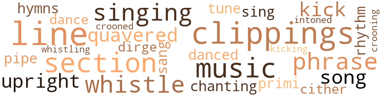
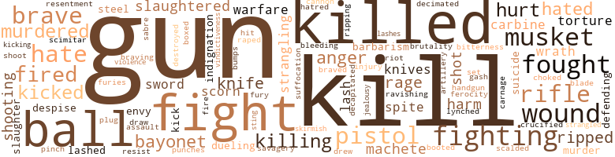

Captain Rebel, by Yerby, Frank (1956)
53 music-related terms matched in this text.
Most frequent terms in this topic: clippings (5); line (5); music (4); section (4); singing (3)
clipping.n.01
Definition: an excerpt cut from a newspaper or magazine
| word | sentence |
|---|---|
| clippings | To that end , he gathered the clippings from the newspapers he had saved , in which several writers had attacked him in print for his disloyalty to the Confederate cause - all of them , of course , prior to the launching of the Velican . |
| clippings | The news about that event , and the later clippings prais - ing his services , even , some of them , apologizing for their hasty judgments against him , he burnt with Machiavel - lian glee . |
| clippings | The clippings , for which you can be thankful , are genuine . . . . " What I can be thankful for , Tyler thought grimly , is that you did n't check the later dates of the same papers . |
| clippings | You have clippings indicating I launched a vessel go blockade running . |
| clippings | You produce clippings to say I outfitted the Pelican for blockade running . |
croon.v.01
Definition: sing softly
| word | sentence |
|---|---|
| crooning | Across the aisle , the woman was talking ceaselessly to the sleeping soldier , crooning to him tenderly like a mother with her child . |
| crooned | Across the aisle , the mad woman crooned tenderly to the corpse . |
dance.v.02
Definition: move in a pattern; usually to musical accompaniment; do or perform a dance
| word | sentence |
|---|---|
| danced | He saw his brother 's eyes , exact duplicates of his own , except that no mockery danced in them , ever , searching his face . |
dance.v.03
Definition: skip, leap, or move up and down or sideways
| word | sentence |
|---|---|
| dance | Only - " her voice dropped a languid octave , " I 'm much too tired to dance . |
dirge.n.01
Definition: a song or hymn of mourning composed or performed as a memorial to a dead person
| word | sentence |
|---|---|
| dirge | A dirge , Tyler Meredith thought , for this , my city . |
hymn.n.01
Definition: a song of praise (to God or to a saint or to a nation)
| word | sentence |
|---|---|
| hymns | That , or your hymns , or your sermons , or your mumbled prayers , or ring and vow and other relics of your barbarism ? |
intonation.n.03
Definition: the act of singing in a monotonous tone
| word | sentence |
|---|---|
| chanting | He moved off , toward the Church , hearing the voices of the boys ' choir , soaring high and clear and pure , like the chanting of angels . |
kick.v.04
Definition: kick a leg up
| word | sentence |
|---|---|
| kick | When you get into double harness , better be sure your partner 's not going to kick over the traces . |
| Kick | " Kick that door loose , boy , " he said calmly . |
| kicking | They ringed him , kicking . |
music.n.01
Definition: an artistic form of auditory communication incorporating instrumental or vocal tones in a structured and continuous manner
| word | sentence |
|---|---|
| music | It would have been so easy to forget , to rush forward , as so many others were doing , impelled by the music , the tramp of boots against the cobblestones , the white winged blur of the handkerchiefs that the women were waving from the galleries , to let the intoxication of the moment cap - ture him , and to stand up with the tight knots of other men before the recruiting sergeants ' booths on ever ) ' corner , hand raised to take the oath of allegiance to thej new Confederacy , not yet completely born . |
| music | Wonder if Cedric 's got an extra among all those music hall actresses and dancers he 's always got in tow ? |
| music | There had been a number of exceedingly pretty minor actresses and music hall performers there ; but their faces were a blur to him , now . |
| music | Com - posed some decent music ? " |
phrase.n.02
Definition: a short musical passage
| word | sentence |
|---|---|
| phrase | He managed , in a single final phrase , to include our bonny flag , the purity of Southern Womanhood , the Justice of Almighty God , and the Righteous Holiness of Our Cause . |
| phrases | Be - sides them , the men wrote , men unaccustomed to words , pouring out their hearts in awkward phrases . |
| phrases | She put down her pen , and closed the diary slowly , keeping one finger between the pages so that the still wet phrases would not blot , think - ing with some annoyance of how she could word the rest of the sentence that her sister had interrupted : " Per - haps , by our showing a certain amount of severity towards him , Tyler can be shocked into - " Into what ? |
pipe.n.04
Definition: a tubular wind instrument
| word | sentence |
|---|---|
| pipe | Vivian applied a fresh match to his pipe . |
primo.n.01
Definition: the principal part of a duet (especially a piano duet)
| word | sentence |
|---|---|
| primi | Being Gallic , being warm and human and absolutely clear , he did not feel himself hemmed in by blackness , threatened by the alien primi - tive race among whom he lived . |
rhythm.n.04
Definition: the arrangement of spoken words alternating stressed and unstressed elements
| word | sentence |
|---|---|
| rhythm | He rode toward New Orleans , sitting loosely in the saddle , the slow clip-clopping of the horse 's hooves measuring out the leaden rhythm of his thoughts . |
section.n.01
Definition: a self-contained part of a larger composition (written or musical)
| word | sentence |
|---|---|
| section | Then he spent a few days among the saloons , dives , barrelhouses of the worst section of the city , recruiting as his lieutenants , the idle , dissolute riffraff of that law - less town , aided in this by the fact that he knew many of them personally , having constantly pained both his father and his brother in his youth by the delight that he had found in the company of vagrants , blackguards , and thieves . |
| section | In her whole history the South had never pro- duced enough iron to supply her peacetime needs ; at war , the practice of moving railroad tracks from one section of the country to another as the military needs became more or less pressing , was common . |
| section | There he lay Hargraves down , took the last splintered section of the mast in sight , and tied the unconscious engineer to it . |
| section | " It 's your section . |
sing.v.02
Definition: produce tones with the voice
| word | sentence |
|---|---|
| sing | A small steamer limped up the river , both masts gone , her funnel shot riddled , two of her long boats smashed , her walking beam making a pe - culiarly ragged sound because several paddles were mis - sing from one sidewheel , seriously unbalancing her . |
| singing | Down below , a soldier began singing " I 'll Take You Home Again , Kathleen . " |
| sang | " That they 'd give the command to one of those Western Generals : Thomas or Sherman or - Grant .... " " I 'll take you home again , Kathleen , " the soldier sang . |
singing.n.01
Definition: the act of singing vocal music
| word | sentence |
|---|---|
| singing | I feel like singing - like dancing . |
| singing | She swung the whisk , and the blue flies rose in a singing cloud . |
song.n.01
Definition: a short musical composition with words
| word | sentence |
|---|---|
| song | I got her for a song . |
| song | It was a very beautiful song , haunting and sad , and sweet . |
tone.v.01
Definition: utter monotonously and repetitively and rhythmically
| word | sentence |
|---|---|
| intoned | " My mule is white ! " the Negro intoned . |
tune.n.01
Definition: a succession of notes forming a distinctive sequence
| word | sentence |
|---|---|
| line | And Rene was left with his daughter , Lauricl , named after his mother : Lauriel , whose light chestnut hair curled softly about her shoulders , darkened and beau - tified by her father 's heritage , for her mother 's had been as straight as the tail of a palomino mare ; whose mouth was soft and full-fleshed , instead of following poor Hilda 's almost lipless line ; and whose eyes were tawny hazel - and who , tragically , combined with all her beauty , more than a little of her father 's malaise of soul . |
| line | " But things rarely fall out on the line the way a body plans them . |
| line | The crew of the crippled steamer slung down a line , and hauled the wiry , bewhiskered little doctor aboard . |
| tune | " But , " the General went on imperturbably , " they sure changed their tune , later . |
| lines | They drew up their lines that night along the Orange Turnpike . |
| line | The things that came to mind , recalling it , were chaotic : the feeling of surprise that this perfect terrain for defense was negated at first by the human element : by Yanks that attacked like no Yanks had ever attacked before , swarming amid the trees in a blue clad horde , rolling Ewell 's center up , breaking the first line in minutes , the second in more minutes , and hurling them back upon the third . |
| line | You have n't written me a line ; you would have been a heck of a lot better off if I had stayed put where I was , and - " She caught both of his hands in hers , suddenly . |
upright.n.02
Definition: a piano with a vertical sounding board
| word | sentence |
|---|---|
| upright | All he needs to do is to neglect a few small things : to walk upright in - stead of to crawl , to fail to dig in , not to try too hard to find cover . |
| upright | Then he was sitting bolt upright in his bed . |
warble.v.01
Definition: sing or play with trills, alternating with the half note above or below
| word | sentence |
|---|---|
| quavered | " All they needed to do was not to run from him . . . . " " - And green - " the tenor quavered . |
| quavered | " Lawdy , Marse Ty , " the Negro quavered . |
whistle.v.01
Definition: make whistling sounds
| word | sentence |
|---|---|
| whistle | The Pelican , creeping through the fog-shrouded chan - nel , sounding her whistle at one minute intervals to avoid collision , a danger to which the very effectiveness of her camouflage rendered her particularly liable , was scarcely recognizable as the vessel that had sailed down the river from New Orleans in October of Sixty one . |
| whistle | He heard then , the whining whistle of shells passing overhead ; and looking back , he saw the white geysers rising close to the bows of the foremost frigate . |
| whistling | Behind them , the Yankee cruisers came alive ; they could sec the gunflashes now , hear the whistling crack of shells passing overhead . |
| whistle | Given the choice between the morals they 've been taught and a man like Ty , the morals can go whistle up a hollow stump . |
zither.n.01
Definition: a musical stringed instrument with strings stretched over a flat sounding board; it is laid flat and played with a plectrum and with fingers
| word | sentence |
|---|---|
| cither | There were several Union cruisers , he well knew , which could outfoot cither the Sea Witch or the Captain Vat 1 . |
419 violence-related terms matched in this text.
Most frequent terms in this topic: guns (26); killed (25); kill (21); fight (18); fighting (15)
anger.n.01
Definition: a strong emotion; a feeling that is oriented toward some real or supposed grievance
| word | sentence |
|---|---|
| anger | Certainly not anger . |
| anger | Joseph 's face darkened in anger . |
| anger | So they started searching 'em .... " Father Joseph stiffened ; his face white with anger . |
| Anger | Anger had replaced it . |
| anger | You married him in anger against me , not in love . |
| anger | But he was consumed with icy anger . |
bayonet.n.01
Definition: a knife that can be fixed to the end of a rifle and used as a weapon
| word | sentence |
|---|---|
| bayonet | Being brave enough to blow a man 's brains out , crack his skull with a musket butt or stick a bayonet through his guts over a difference of opinion seems a mite useless to me - not to mention a sight obscene . |
| bayonet | The rest of it was horror : the Confederate private , not quite eighteen who grinned at him cheerfully as he scraped the Union soldier 's brains from his inusketbutt with his bayonet . |
| bayonet | But if you do , I 'm going to blow your brains out , and stick a bayonet through your miserable guts to boot ! |
| bayonets | A sergeant and two guards , armed with rifles with bayonets fixed , came toward the cell . |
| bayonet | He dug himself a little hollow with his bayonet or his hands each time he stopped , no matter how tired he was . |
| bayonets | So , they surged back , a sea of blue , crested with a steely foam of bayonets . |
bleeding.n.01
Definition: the flow of blood from a ruptured blood vessel
| word | sentence |
|---|---|
| bleeding | Better the surgeon 's swift slash , and the grating of the bone saw , than the slow bleeding to death of something that was rightly kind of fine . |
blister.v.02
Definition: subject to harsh criticism
| word | sentence |
|---|---|
| scalded | " For he who saves his life shall lose it , and he - " Lord God , Lord God - let go of me - I 'm not ready yet , I can not stand - He stumbled blindly through the darkness his eyes scalded by the rash of tears . |
boot.v.01
Definition: kick; give a boot to
| word | sentence |
|---|---|
| booted | He tore it loose , hurled it into the charred cinders underfoot , lifted his booted foot to grind it in ; but George was too quick for him . |
box.v.03
Definition: engage in a boxing match
| word | sentence |
|---|---|
| boxed | For - in that rough parallelogram of hill and scraggly wood where Lick and Snake and Owl Creeks boxed off a battle ground , and a tiny white chapel called Shiloh Church , and a steamboat dock called Pittsburg Landing were given by man 's brutality , stupidity , savagery , courage , heroism , and honor , chance immortality - he had seen for the first time Union troops who when beaten , did not run ; commanded by Generals , whom he , in common with every Southerner alive , had n't believed the North capable of producing . |
brush.n.06
Definition: a minor short-term fight
| word | sentence |
|---|---|
| skirmish | I managed the un - paralleled stupidity of getting myself badly wounded in a minor skirmish long before Shiloh , the day before Fort Donelson fell , in fact . |
brutality.n.02
Definition: a brutal barbarous savage act
| word | sentence |
|---|---|
| barbarism | We 're defending civil - | ization against barbarism , but - " " ' Put up thy sword , ' " Tyler quoted quietly , " ' For he who takes up the sword , shalt die thereby . . . " " IIow else could it be done ? |
| barbarism | That , or your hymns , or your sermons , or your mumbled prayers , or ring and vow and other relics of your barbarism ? |
bump.n.01
Definition: a lump on the body caused by a blow
| word | sentence |
|---|---|
| bumps | Then I was taken with a mighty hankering to have my palm read , or the bumps on my head . |
butcher.v.01
Definition: kill (animals) usually for food consumption
| word | sentence |
|---|---|
| slaughtered | Please , Marie . . . . " Again a chicken was expertly slaughtered . |
| slaughtered | And then , just once - on the second day , after Lew Wallace had come up on the double at midnight with seven thousand blue clad troops to replace the other Wallace , W. H. L. , killed yesterday upon the field , and to stay Grant 's right ; Lew Wallace a not too bad General in spite of the fact that he regarded war as grist for his mill , transforming the sights and sounds of Shiloh into the military passages of his Prince of India ; getting here , perhaps , the first vague glimmerings of Ben Hur , the exception perhaps to the general rule that writers should not be allowed into uniform : war is not for imaginative men ; for imagination and cowardice go hand in hand ; after " Bull " Nelson , Crittenden , and McCook came up with three divisions of Buell 's troops , dooming Beaure - gard who had taken Johnson 's place , with the one thing that nearly always doomed the South : the Union 's ability to put not one , but three fresh armies in the field to re - place the one slaughtered the day before - the one for - lorn example of saving grace : He had knelt beside a dying New Orleans lad , young Devereux , the Senator 's son . |
| slaughtered | They had slaughtered Yankees by the tens of thousands , while losing by the thousands themselves . |
| slaughtered | Ricket 's VI Corps came moving up ; the XIX Corps were already scrambling up the face of that hill , where , but for Crook 's diversionary flanking attack , more mountain - eering than warfare , they would have been slaughtered ; and Phil Sheridan down below , roaring : " Forward , forward everything ! " |
cannon.n.04
Definition: heavy automatic gun fired from an airplane
| word | sentence |
|---|---|
| cannon | Perhaps even before now ; maybe even the day that old Edmund Ruffin had yanked the lanyard of the cannon which sent the first shot screaming upon Fort Sumter . |
carbine.n.01
Definition: light automatic rifle
| word | sentence |
|---|---|
| carbine | So he swarmed over the defile in a cloud of horsemen , riding with utter disregard of life and limb ; jumping ditches , pounding on , hell for leather , firing revolvers and a new kind of carbine that fired and fired like a pistol without ever having to be reloaded . |
| carbines | George Custer in his velvet cloak , his yellow curls allying , thundering down upon them : the Colt revolvers and the Spencer repeating carbines crackling like a bush fire that could not be put out . |
| carbines | George shot a trooper out of the saddle , and a dozen carbines rested upon him and crashed . |
contemn.v.01
Definition: look down on with disdain
| word | sentence |
|---|---|
| despise | I despise you ! |
| despise | You make a pretty poor out at defending George Drake whom you despise , Kitten , or female virtue , when your own , would n't bear any too close scrutiny . |
| scorn | I 'm not fit to tie her shoes , and I scorn her because she is living in sin with the man I love . |
| scorn | I have no right to scorn her . |
| scorn | " It seems to me that you do n't exactly scorn their society . . . " " Do n't get myself warped in . |
crucify.v.01
Definition: kill by nailing onto a cross
| word | sentence |
|---|---|
| crucified | What was left was emptiness , impenetrable even to gull mew and tern whimper and the white and black spread of ominous albatross , crucified against the void of heaven ; unbroken even by smoke plume or sail glint or land-dark lancing the rim of vision . |
cut.n.05
Definition: a wound made by cutting
| word | sentence |
|---|---|
| gash | And in this consisted his luck , that the maggots got into the wound and ate away the festered flesh , so that the great gash was cleansed . |
decapitate.v.01
Definition: cut the head of
| word | sentence |
|---|---|
| decapitated | He had been decapitated . |
destroy.v.04
Definition: put (an animal) to death
| word | sentence |
|---|---|
| destroyed | That this was stealing , Tyler admitted to himself , making only the highly irrelevant defense that he was only taking that which , having been destroyed , would not have benefited its owners anyhow . |
draw.v.23
Definition: pull (a person) apart with four horses tied to his extremities, so as to execute him
| word | sentence |
|---|---|
| draw | On steam , he would creep her in and out of the harbors ; once at sea , he would draw up the ponderous , resistance-creating paddle wheels , and crack on all sail . |
| drew | They drew up their lines that night along the Orange Turnpike . |
duel.v.01
Definition: fight a duel, as over one's honor or a woman
| word | sentence |
|---|---|
| dueling | In the end , the precaution that their seconds had taken - of so undercharging the muzzle loading dueling pistols with powder , that even had one of them accidentally scored a direct hit on a vital spot , the ball probably would have lacked sufficient force to even penetrate the clothing they wore - proved unnecessary ; they exchanged five rounds without throwing anywhere near each other , in - flicted terrible wounds upon the branches and trunks of the oaks , shook hands and announced honor satisfied . |
| dueling | Feel about it just like I do about dueling : honest difference of opinion ai n't rightly cause for killing a fellow . . . " Wo n't come to that . |
eliminate.v.03
Definition: kill in large numbers
| word | sentence |
|---|---|
| decimated | Had she lived she might have cured him ; but one of the yearly epidemics which regularly decimated Louisiana carried her off . |
envy.n.01
Definition: a feeling of grudging admiration and desire to have something that is possessed by another
| word | sentence |
|---|---|
| envy | The majority of them got that way out of envy any - how . |
| envy | Tyler looked at her in mockery and contempt , and wonder and awe and envy at her certainty . |
ferociousness.n.01
Definition: the trait of extreme cruelty
| word | sentence |
|---|---|
| brutality | For - in that rough parallelogram of hill and scraggly wood where Lick and Snake and Owl Creeks boxed off a battle ground , and a tiny white chapel called Shiloh Church , and a steamboat dock called Pittsburg Landing were given by man 's brutality , stupidity , savagery , courage , heroism , and honor , chance immortality - he had seen for the first time Union troops who when beaten , did not run ; commanded by Generals , whom he , in common with every Southerner alive , had n't believed the North capable of producing . |
ferocity.n.01
Definition: the property of being wild or turbulent
| word | sentence |
|---|---|
| ferocity | She hated the surgeons with cold ferocity . |
fight.n.02
Definition: the act of fighting; any contest or struggle
| word | sentence |
|---|---|
| fighting | So Van Dorn waited for one of the best fighting craft ever built by cither side , while she lay in sight of Baton Rouge , rammed into a mudbank , with her starboard engine a mass of shattered junk . |
fight.n.05
Definition: a boxing or wrestling match
| word | sentence |
|---|---|
| fight | " It will be a long fight , my brothers , and a hard one . |
| fight | We 'll give them a good fight on land , because we are a race of hunters , crackshots , and above all horse - men - our cavalry is already the world 's best , bar none - but at sea , we 're plumb , downright out of luck , son ... . " |
| fight | And in those disordered days , it was not long in coming : Fie was present at a fight between Yankee troops on leave , and a group of New Orleans citizens . |
| fight | The Padre was in the thick of every fight , yet he never got hit . |
| fight | The fight went on all the next day , and then it happened : the last straw , the one , last , almost absolutely unacceptable thing , that came as near to breaking Father Joseph Meredith as any - thing ever could . . . . |
| fight | In a brush cover fight , extra muskets counted . |
fight.v.02
Definition: fight against or resist strongly
| word | sentence |
|---|---|
| fight | Only you fight it . |
| fight | Even he had to fight it . |
| fighting | We 're fighting for a \ way of life . |
| defending | We 're defending civil - | ization against barbarism , but - " " ' Put up thy sword , ' " Tyler quoted quietly , " ' For he who takes up the sword , shalt die thereby . . . " " IIow else could it be done ? |
| fighting | I 'll be putting back into New Orleans every few weeks , and George 'll be stuck up there in Virginia fighting the Yan - kees . |
| fought | The rows of poor women without the bales of Con - federate money it now took to purchase the simplest article , standing there with the unashamed tears streak - ing their faces , while their more fortunate sisters , shrieked , clawed , and fought like tigresses over a scrap of silk , a flagon of perfume . |
| fought | And he , Johnny Reb , who nine times out of ten had never owned a slave , was beginning to dimly apprehend that this war , actually fought over the interests of a tiny ruling class , benefited him not at all . |
| fought | But he fought for it grimly , with bribes in gold to the Confederate officials , hard words , and once with his bony fists . |
| defending | You make a pretty poor out at defending George Drake whom you despise , Kitten , or female virtue , when your own , would n't bear any too close scrutiny . |
| fought | The greatest battle of the war has been fought . |
| fighting | So confused was the fighting that even such things were possible . |
| fight | And nobody could ever say again that Yankees would not fight . |
| fighting | Tyler sat there , shuddering , fighting the nausea rising within him . |
| fighting | There is a war - in which George is fighting . |
| fought | His fame had spread , men fought to sail with him ; even the blockading captains knew him not by name , but by the title Captain Rebel , which he flaunted like a banner across the sweep of seas , and the prize money offered for his capture was the highest on record . |
| fought | On his way , he fought off a gang of bushwhackers , intent upon stripping him of his fine clothes and the gold they were sure he carried . |
| fighting | There was the grinding necessity of fighting them over and over again until all the world was drowned in blood . |
| fighting | I was in that Navy , and I know it 's a first class piece of fighting machinery . |
| fight | We only could of won it if what we believed before had been true : that the Yankees could n't or would n't fight . |
| fight | But anybody thinks Grant or Thomas or Phil Sheridan or Sherman wo n't fight , is crazy . |
| fought | But there the Yankees had both open ground and artillery , their best arm , the one thing they understood with the love and precision and care that the South lavished upon Cavalry ; and they fought the yelling , creeping , dodging grey and butternut boys to a stand . |
| fighting | It went on like that all day and all night , with the rifle flashes spitting the darkness under the trees ; even J. E. B. Stuart , the Bayard of the Con - federacy , having met his match , his horsemen dis - mounted , fighting like infantry against the equally un - horsed cavalry of Phil Sheridan . |
| fighting | Funny - in a way , I 'm fighting for my own salvation . |
| Fight | Fight a war , and one set of deities can help out Priam and Hector , while another set urge on Achilles and Odysseus . |
| fought | Cold Harbor had been fought . |
| fought | The summer of Sixty four ground on while the American States drowned in blood , in a fratricidal con - test between butchers , in the worst fought , worst planned , most costly war in terms of lives lost that Americans had ever fought , and perhaps ever were to . . . . |
| fought | The summer of Sixty four ground on while the American States drowned in blood , in a fratricidal con - test between butchers , in the worst fought , worst planned , most costly war in terms of lives lost that Americans had ever fought , and perhaps ever were to . . . . |
| fight | Do n't tell me you came back to fight for Louisiana ? " |
| fighting | Only , George Drake mused , he ai n't fighting Napoleon ; he 's fighting Phil Sheridan . |
| fighting | Only , George Drake mused , he ai n't fighting Napoleon ; he 's fighting Phil Sheridan . |
| fighting | Marse Robert had only been fighting Grant , a clumsy bear who pawed , got hurt , and pawed again , as though getting hurt just woke him up a mite . |
| fight | Yankees are as brave as any other breed of cuss , but they had the same kind of sadness in them that Father Joe 's got now , from having to fight both us and their gen - erals ' muddled heads . |
| fighting | He was aware that she was fighting for breath . |
| fight | She had to fight hard to keep from coughing ; for so great was the fear of consumption , as Southerners called tu - berculosis , that she risked being put off the train if she gave way to the wracking in her lungs . |
| fought | But he fought clear and reached the Chief . |
| fought | He fought his way upward to the deck . |
| fought | He walked from room to room , the feeling growing in him that if he were to stop now , suddenly turn his head - He fought the impulse . |
| fight | I 'll fight you every way I can : with the press , the law , the pulpit of the Most High God - every way except violence . |
| fighting | But until he regains consciousness , I ca n't decide whether or not he 's fighting . |
| fight | Doctor Le Pierre said you could get well if you 'd just fight . |
| fight | " So , " she said , " you 've got to fight , Ty - you 've simply got to . |
| fight | I 'm going to have to fight my own sister for Ty , just as though she were n't married . |
fury.n.01
Definition: a feeling of intense anger
| word | sentence |
|---|---|
| fury | Then fury leaped into her eyes . |
| rage | He was coming on toward Rene , roaring with pure rage , murder flaming in his bloodshot eyes . |
| rage | He was crying , his boyish face twisted with rage and grief . |
| rage | To an ocean where storms rage , and there are Yankee cruisers waiting off every port . |
| rage | Such designs were all the rage in the Army of Northern Virginia . |
| furies | They made their head god a drunken old lecher ; and created Prometheus chained to his rock , vulture-devoured ; Tantalus in his pool that receded when he bent to drink , with fruits overhead that blew just beyond his fingertips when he reached for them ; Orestes , pursued the world over by the furies as symbols of man 's fate . |
| rage | He felt the sick rage rise to his throat ; but he prayed to God against it and stood tip in the buckboard . |
gag.v.06
Definition: cause to retch or choke
| word | sentence |
|---|---|
| choked | " I 'll be good to them , " Rene choked . |
gun.n.01
Definition: a weapon that discharges a missile at high velocity (especially from a metal tube or barrel)
| word | sentence |
|---|---|
| guns | And in the lightest haze , she could pass almost within range of the bigger guns undetected ! |
| guns | Gentlemen , I hardly need remind you that a squadron of Yankee vessels , totaling nearly fifty heavy guns lies in wait for the Pelican a little more than an hundred miles South of here . |
| gun | Been able to manage a chuckle now 'n then , we would n't be playing with a loaded gun in the dark the way we are now . |
| guns | All of them put together mounting fewer guns than one Union cruiser of the Brooklyn class . |
| guns | The Richmond mounts twenty two nine-inch guns , Lieutenant . |
| guns | The long range Navy guns could smash such an attempt in the launching . |
| gun | A twenty-one gun salute would not have awakened her . |
| guns | The shell bursts straddled the second frigate neatly ; she fell back , and they were under the fort 's guns , and free . |
| gun | " Give me that gun . |
| gun | Then , just on the edge of the night , at a range that Tyler would have sworn that no gun in the world could carry , the cruiser opened up . |
| gun | Every gunner knew you had to straddle a target to get the range , throwing first over , watching the splash through the glasses , correcting , throwing the second short , and then elevating the gun again to a point between the two settings to come anywhere near what you were shooting at . |
| guns | Forty four vessels , three hundred and sixty nine guns , at the mouths of the passes , waiting to get over the bar to steam upriver to take New Orleans . |
| guns | " Mind if I say a prayer for him , Padre ? " the boy said solemnly ; " Do n't think Our Father cares what color suit a man comes to him in ... It was over then ; the attack broken against the guns at Pittsburg Landing ; the blueclad wave coming on , led by Sherman , crying : " Give them hell ! " in a voice gone cracked . |
| guns | On April nineteenth , the day that the guns of the two Forts tuned up disharmoniously , replying to Porter 's mortar vessels which were already lancing the sky with the high , looping trajectory of their shells , throwing them over the bend of the land beyond the willow trees , to crash into the forts , Tyler was ready with his plan : He would lounge ostentatiously about the town , be seen , by as many people as possible while flying squads of blacks , led by his white trash lieutenants , would descend upon the plantations and snatch by main force the bales from the burning . |
| guns | The Louisiana , unable to steer or maneuver , had been tied against a bank and used as a fort ; but , because her builders had had so little knowledge of design that they had cut her gunports so low that her guns could not be elevated to throw any distance beyond point blank range , Far - rngut had simply steered his fleet out of range and pa - raded contemptuously past her , leaving her tied up , help - less to interfere . |
| guns | And the gunners aboard the tall Yankee frigates , patted the breeches of their guns and grinned at them . |
| guns | The frigates stood tall , their guns at ready , loaded with enough grape and canister to make the streets swim with blood . |
| guns | Expect the Yankees to sell us guns and powder and ball to kill them with ? |
| guns | Except guns and gunpowder , and the fine ironclads with the bad engines , the Confederacy produced nothing , while the things she had from before the war , railroads and wagons for instance , were in the last stages of wearing out . |
| guns | Cotton to England and France for credits , then guns bought with the credits ? |
| guns | Mighty pretty if they did n't have to bring the guns through the whole blamed Yankee Navy . |
| guns | The guns they 'll get through would n't arm a platoon . . . . |
| guns | The mounds of Confederate dead before Warren 's guns proved that . |
| guns | The safest way into the Cape Fear River was to sail past the entrance to the North ; and putting about , creep along the shoreline past Federal Point , turning to star - board into New Inlet , then making a dash straight up the river until the guns of Fort Fisher provided cover . |
| guns | By now , more - over , the blockading captains knew the trick , and rode ever closer inshore , kept from closing New Inlet alto - gether by the fact that Colonel Lamb 's guns outranged theirs , and , having solid masonry instead of a rolling deck to fire from , were far more accurate . |
| guns | The Captain Pat II knifed in between two frigates like a fencer , heeled over hard to port to avoid ramming a gunboat , skidded dizzily back to star - board and raced on , laughing at the salvos they launched against her , seeing the shell bursts raising their columns of white hundreds of yards away ; then the great Whits - worth guns in Fort Fisher began to tune up , and they were free . |
| gun | Early had Rodes ' division in , slashing through Wright 's brigades , the Rebel Yell echoing above the gun fire . |
| guns | The rules no longer applied : " Them Yanks got guns they load on Sunday , and shoot all week ! " |
| guns | The Yankees flew down the road , leaving fifteen hundred prisoners and twenty two guns in Early 's hands . |
| guns | Far in the rear , Sheridan heard the ominous rumble of the quarreling guns . |
| guns | The fleet that should have been miles off shore for fear of the guns in Fort Fisher and on Smith 's Island . |
| gun | They pounded down upon the nearest gun - boat , their broken funnels trailing a banner of flame , not smoke . |
| gun | Too soon - for beyond the line of gun boats and ironclads were the fast sloops of war and the cruisers . |
| gun | Then one by one they opened up , their black hulls lighted by the gun bursts , firing in salvos , raising pillars of white all around the Captain Pat , ringing her with the silver geysers of sudden death , finding the range now , slamming solid shot into her steel hull until she reeled like a drunkard , sweeping her decks with shrapnel and grape until all the scuppers ran with blood . |
| gun | Tyler , poised at the rail , with Hargraves in his arms saw the gun flashes . |
| guns | Them fellows mean business - and they 've got guns . |
hate.n.01
Definition: the emotion of intense dislike; a feeling of dislike so strong that it demands action
| word | sentence |
|---|---|
| hate | There were many more blueclad dead and wounded than grey ; but it did n't make any differ - ence ; by May , 1864 , nobody had enough hate left in his heart to exult over what happened to them . |
| hatred | There were good reasons for this hatred . |
| hate | If I had a son , I 'd want to leave him a better legacy than hate ; I 'd rather see him dead than growing up to the nasty , stinking business of man-killing . |
hate.v.01
Definition: dislike intensely; feel antipathy or aversion towards
| word | sentence |
|---|---|
| hates | In fact , it hates logic . |
| hate | You 've no right to hate your own . . . " What , " Rene said quietly , " is our own , Tyler ? |
| hate | The niggers hate us . |
| hate | I hate you ! |
| hate | I do n't hate you , Ty . |
| hate | " I hate their stinking black hides , but I 'll try . |
| hate | I 'd hate to try to take a packet past the snags and over the sandbars . . . He could see Joseph looking at him , and realized his brother saw through his ' words as through so much win - dow glass . |
| hated | For she hated her unborn child with the same intensity that she did the man who had fathered it by force . |
| hated | Was it more or less terrible that men who no longer hated each other should continue to kill ? |
| hated | He hated it : the lying , the sneaking , the pretense . |
| hated | Sure Lord would of hated to lose your friendship over this . |
| hated | She hated the surgeons with cold ferocity . |
| hated | " I thought I hated you ; but I do n't . |
| hate | But it was n't hate - not for you , anyhow . |
| hate | I thought I 'd hate her - that I could put her out for adoption ; but I could n't . |
indignation.n.01
Definition: a feeling of righteous anger
| word | sentence |
|---|---|
| indignation | They , his Southern trained mind told him , would have subjected her to multiple rape , cut her throat and left her there , secure in the belief that white indignation over their crimes would be tempered by the reflection that she was not , after all , a member of the • master race . |
| indignation | Ca n't be so proud of all * my burning indignation over Ty 's lack of patriotism ; because even I know it 's pure fakery , I 'd marry him if he came marching into New Orleans dressed in blue at the head of the Union Army and set the place afire . |
injury.n.01
Definition: any physical damage to the body caused by violence or accident or fracture etc.
| word | sentence |
|---|---|
| harm | Might help , he thought , and it damned sure ca n't do any harm . . . . |
| harm | And if I permitted either of us to wish harm to George , on that instant God 's protection over you would cease . |
| injury | Third motion - Break off promptly , on both legs , to escape jarring or injury should the piece recoil . " |
| hurt | Marse Robert had only been fighting Grant , a clumsy bear who pawed , got hurt , and pawed again , as though getting hurt just woke him up a mite . |
| harm | The ones , thank God very rare , who set convalescence back by weeks by offering comfort of a kind that the men were not suffi - ciently recovered to undertake without harm . |
| harm | And the good you can do with the funds you call dirty gold will more than make up for any harm you might have done . " |
jealousy.n.01
Definition: a feeling of jealous envy (especially of a rival)
| word | sentence |
|---|---|
| jealousy | You married George out of pique , be - cause that Maryland girl wrote you a letter that set you wild with jealousy . |
kick.v.04
Definition: kick a leg up
| word | sentence |
|---|---|
| kick | When you get into double harness , better be sure your partner 's not going to kick over the traces . |
| Kick | " Kick that door loose , boy , " he said calmly . |
| kicking | They ringed him , kicking . |
kick_back.v.02
Definition: spring back, as from a forceful thrust
| word | sentence |
|---|---|
| kicked | Rene 's been kicked around enough - though a mighty heap of what 's happened to him is his own damned fault . |
| kicked | The resulting damages when her husband kicked down the door , cost Tyler nearly fifty dollars in repairs , and two days time . |
| kicked | He began dressing with elaborate cau - tion ; but in the middle of his preparations , he kicked over a footstool with a crash like thunder . |
| kicked | Any printer still operating at that time , would have kicked me out of his shop in the first place , and reported me to the Reb Secret Service in the second . |
| kicked | Remember how he kicked that nigger over the balcony ? |
| kicked | I know we 're going to get our front teeth kicked in ; and after they 've knocked us down , they 're going to stomp us flat . |
| kicked | " I was kicked . |
kill.v.10
Definition: cause the death of, without intention
| word | sentence |
|---|---|
| kill | The Scriptures say flatly : ' Thou shalt not kill . ' |
| kill | And I 've got to pray for boys who 'll have to go out and kill , go out and die . |
| killed | The man had him horse - whipped for his presumption - a kindness , actually , for the Caucasian could easily have had him killed without danger of arrest . |
| kill | Women always do though they swear to kill themselves , all such nonsense . |
| killed | Maybe he 'll be killed . |
| killing | " Go on , Tyler . . . " A people , speaking the same language , worshipping the same God , of the same blood , killing each other . |
| killed | And not being stupid , they 'll learn , j In fact , they 've got time to learn , because even if ever ) ' one of our soldiers took three Yanks with him before he got killed , they 'd end up with an army in the field and we 'd be defenseless . |
| kill | Light grey , just off white , with enough bluish pigment added to the white to kill the sparkle , the reflection . |
| kill | If speechify - ing could kill , would n't be a live Yankee left ' twixt the Mason and Dixon and the Canadian border ! |
| kill | In Africa , he thought wryly , a boy must kill his lion , stand with glowing coals pressed under his armpits with - out yelping before they 'll accept him as a man . |
| kill | It 's going to most kill me , Sir ; but damned if I 'm not going to keep my word ! " |
| kill | Going to kill that bastid ! |
| killed | Now we 're on fire and sinking , and the Cap'n - the best damn Cap'n in the world is dead , and I killed him ! |
| killed | I killed him ! |
| killed | " Look , son , " Tyler said , the unashamed tears bright in his eyes ; " I 'm not dead , I 'm - " " I killed ! " |
| killed | " I broke my word and | killed the Cap'n - " Then he lapsed into silence . |
| killed | " There were ten thousand men killed and wounded at Shiloh , " Ruth said , her voice flat . |
| killed | Ten thousand killed or wounded on both sides - and George was among the wounded . |
| killed | Pinned down by fire with the regiment , he had seen a horse killed under the Union General ; Grant , rising from the mud , not even brushing it off , signalled for another ; mounting , a sharpshooter 's ball took off his hat , he rode on , bareheaded ; another took a patch of cloth from his coat between his side and his arm ; he ignored it , giving orders without even raising his voice more than was necessary ; still another clipped the insignia from his shoulder . |
| kill | Seeing that , Father Joe began to know the meaning of fear : We shall never beat that man , unless we kill him . |
| killed | And why - he thought in aching wonder , seeing the tall tree just to the right of Grant that had not one of its thousands of leaves remaining , every one of them cut from the branches by the incredible volume of rifle fire - have we not already killed him - if he is not pro- tected by Divine Providence ? |
| killed | And then , just once - on the second day , after Lew Wallace had come up on the double at midnight with seven thousand blue clad troops to replace the other Wallace , W. H. L. , killed yesterday upon the field , and to stay Grant 's right ; Lew Wallace a not too bad General in spite of the fact that he regarded war as grist for his mill , transforming the sights and sounds of Shiloh into the military passages of his Prince of India ; getting here , perhaps , the first vague glimmerings of Ben Hur , the exception perhaps to the general rule that writers should not be allowed into uniform : war is not for imaginative men ; for imagination and cowardice go hand in hand ; after " Bull " Nelson , Crittenden , and McCook came up with three divisions of Buell 's troops , dooming Beaure - gard who had taken Johnson 's place , with the one thing that nearly always doomed the South : the Union 's ability to put not one , but three fresh armies in the field to re - place the one slaughtered the day before - the one for - lorn example of saving grace : He had knelt beside a dying New Orleans lad , young Devereux , the Senator 's son . |
| Kill | Kill the damned Yankees ! " they roared . |
| Kill | Kill those Yankee officers and there would n't be any New Orleans left . |
| kill | " They wo n't kill you ! " she sobbed . |
| killing | In an unarmed vessel , like the one which twice now has been smashed by cannon fire , killing two Executive Officers of yours , as well as seven members of your crew . |
| kill | Took upon himself to kill two of your Negroes . |
| killing | So Tyler had taken the wheel and brought the Sea Witch in , with eleven hunks of Union steel in his hide , his belly ripped across by a shell splinter , not quite deep enough to cut through the muscles protecting his vitals ; and he had spent the next three months in a Wilmington Hospital where the doctors came closer to killing him than the Yankees had . |
| kill | Expect the Yankees to sell us guns and powder and ball to kill them with ? |
| kill | Was it more or less terrible that men who no longer hated each other should continue to kill ? |
| killed | But like that you often got there and killed the enemy . |
| killed | Man shot for cowardice is just as dead as one killed in battle . |
| killed | Besides , cowards get themselves killed mighty near as often as heroes . |
| killed | And the battle settled down to a mur - derous rifle duel from cover , with a hundred men killed every minute , and every man , North or South , trying , in the intervals between the volleys to burrow straight through to China . |
| kill | It 's a crime to kill , steal , commit adultery . |
| kill | But I can give you a dozen examples offhand of times when it was eminently right to do any of those things . . . " Right to kill , Ty ? " |
| kill | Well , one day , the Spirit told him to kill all the white folks in Nassau . |
| kill | And I shot to kill , Babydoll . |
| killed | But he had killed one man , half killed another , and the lives of a woman and a child were at stake . |
| killed | But he had killed one man , half killed another , and the lives of a woman and a child were at stake . |
| killing | I 've never felt the slightest guilt over killing him . . . " I can see that , " Sue said slowly . |
| killed | The kind you saw in men who nearly always got killed the next day . |
| killed | The well meaning women who stubbornly disobeyed orders , and killed men with their infallible home remedies . |
| killed | I killed you - and knowing that - knowing you were dead I - " But it was n't George beside her any longer . |
| killed | The shell burst that had started the fire had killed them instantly . |
| killed | You killed my sister and wrecked my life . |
| kill | Said trying to straighten me out would kill me sure . ' |
| kill | Lowed they 'd kill him if he did n't quit . |
| Kill | " Kill him ! |
| Kill | Kill the scalawagging son of a bitch ! " |
| killed | One more kick would have killed him . |
| kill | " Do n't kill him , boys ! " |
| killing | She 's right , he thought ; killing me is n't anything much , but killing those kids ' chances is something else again . |
| killing | She 's right , he thought ; killing me is n't anything much , but killing those kids ' chances is something else again . |
| killing | Feel about it just like I do about dueling : honest difference of opinion ai n't rightly cause for killing a fellow . . . " Wo n't come to that . |
| killed | I do n't want to see it killed . |
killing.n.02
Definition: the act of terminating a life
| word | sentence |
|---|---|
| kill | He brings his ships in , even if he has to half kill hisself to do it ... " And Hargraves once more lorded it over the engine room , and the black gangs . |
knife.n.02
Definition: a weapon with a handle and blade with a sharp point
| word | sentence |
|---|---|
| knife | Then , taking a broad bladed knife from the drawer , she slashed the chicken open and be - gan to examine its entrails . |
| knife | The black had a cane knife , three feet of razor-edged machete blade , in his hand . |
| knife | The cane knife went spinning from the Negro 's fist . |
| knife | Long and narrow , shaped like a knife blade - You 're to command her , of course . |
| knives | Using rented wagons and Negro labor , surplus since the official curtailment of the crop , the cotton lands being not yet converted into food growing , he detoured around Rene 's entrance , and entered the wild outlands the little planter never visited , by a game trail widened with cane knives to permit the passage of the wagons . |
| knife | But Tyler rode her in , knowing that her knife - like prow , headed directly for the inshore fleet , made the poorest kind of a target , knowing that her off white color blended so perfectly with the fog that she would be in among them before they could see her . |
| knives | She could n't see for the crying and the spasms of coughing that ripped her body like so many knives . |
| knives | Afraid to sleep because you did n't know what night the redskins were going to come whooping down on you , scalping knives out ? |
lynch.v.01
Definition: kill without legal sanction
| word | sentence |
|---|---|
| lynched | " Because I 'd get lynched if I did n't . |
machete.n.01
Definition: a large heavy knife used in Central and South America as a weapon or for cutting vegetation
| word | sentence |
|---|---|
| machete | The black had a cane knife , three feet of razor-edged machete blade , in his hand . |
| machete | He swung the machete , and Rene was left with the whip handle in his hands , the blade cutting through wood and leather as though through so much cheese . |
| machete | So he took a machete and started out to do it . |
| machete | Saw him running down the street with it dangling by a shred , with Hiram behind him swinging that machete . |
malice.n.01
Definition: feeling a need to see others suffer
| word | sentence |
|---|---|
| spite | And then , just once - on the second day , after Lew Wallace had come up on the double at midnight with seven thousand blue clad troops to replace the other Wallace , W. H. L. , killed yesterday upon the field , and to stay Grant 's right ; Lew Wallace a not too bad General in spite of the fact that he regarded war as grist for his mill , transforming the sights and sounds of Shiloh into the military passages of his Prince of India ; getting here , perhaps , the first vague glimmerings of Ben Hur , the exception perhaps to the general rule that writers should not be allowed into uniform : war is not for imaginative men ; for imagination and cowardice go hand in hand ; after " Bull " Nelson , Crittenden , and McCook came up with three divisions of Buell 's troops , dooming Beaure - gard who had taken Johnson 's place , with the one thing that nearly always doomed the South : the Union 's ability to put not one , but three fresh armies in the field to re - place the one slaughtered the day before - the one for - lorn example of saving grace : He had knelt beside a dying New Orleans lad , young Devereux , the Senator 's son . |
| spite | In spite of what people say , I do n't think they 've ceased being gentlemen . . . And nothing Tyler said could move her from her stand . |
| spite | She had a hard time making them out : " So , my darling , for you remain that in spite of all you 've done , there is no need to ask me to divorce you . |
murder.n.01
Definition: unlawful premeditated killing of a human being by a human being
| word | sentence |
|---|---|
| murder | He was coming on toward Rene , roaring with pure rage , murder flaming in his bloodshot eyes . |
| murder | A division could murder an army . |
murder.v.01
Definition: kill intentionally and with premeditation
| word | sentence |
|---|---|
| murdered | For , four days after he had slipped out into the Gulf Stream , an iron barn roof on a raft had crept down past the Nor - folk estuary and murdered half the Union fleet at Hampton Roads . |
| Murdered | Murdered them , because solid shot bounced up and away from sloping four-inch-thick iron plates like peas strildng a tin roof , while she smashed in their wooden sides with her prow ; cut them to rib - bons and splinters at point blank range , invulnerable to their broadsides ; the others were saved by nightfall and the miracle that no spinner of tales would have dared to invent , the arrival , that same night , of an over - turned cooking pot on a shingle , called the Monitor . |
| murdered | Her old man allowed he 'd see her dead and in hell , before he 'd permit her to marry ' a trader in human flesh - a man who gained his bread from the sweat of other men 's faces - ' Ca n't say I see how the niggers got in - volved in it ; but before he was done he 'd accused me , personally , of having murdered John Brown . . . " New Englander ? " |
| murdered | That and the sick , tingling knot of quivering nerves that forbade food and drink ; that murdered sleep . |
| murdered | " ' Macbeth hath murdered sleep / " he read . |
| murdered | Tyler Meredith hath murdered sleep , he mocked him - self . |
| Murdered | Murdered it by his folly , and his pride . . . And it was then , at that precise instant , before he could even complete his thought , that he heard the knocking at the door . |
musket.n.01
Definition: a muzzle-loading shoulder gun with a long barrel; formerly used by infantrymen
| word | sentence |
|---|---|
| musket | Being brave enough to blow a man 's brains out , crack his skull with a musket butt or stick a bayonet through his guts over a difference of opinion seems a mite useless to me - not to mention a sight obscene . |
| musket | Needless to say , he is risking his life under much greater odds than any well armed soldier provided with a good musket and sufficient cover ever faces in the field - " Tyler heard a muffled sound to his left . |
| muskets | " Fire , " he said , speaking flatly , calmly , not shouting or even raising his voice ; and they , all of them raising as one man , their Enfields , ripped out a ragged volley , the smoke pluming up from the muskets half hiding them , and only the tongues of orange flame stabbing through . |
| musket | And raising his eyes , he had looked into the muzzle of a Yankee musket held steady on his heart . |
| musket | Then a musket swipe had knocked the Union soldier sprawling , and another blueclad boy stood tall against the man made lightnings . |
| musket | What you do , is go find some one who ever saw me in grey or butternut with a musket in my hands . |
| muskets | A squad , a platoon , with some of its numbers lying on the firing line , and others behind them to reload and pass them the muskets as fast as they needed them , could stand off a regiment . |
| muskets | George had four muskets he had taken off of dead men . |
| muskets | In a brush cover fight , extra muskets counted . |
| musket | Father Joe bent and picked up a musket . |
| musket | The men stared a moment longer , then the musket barrels snapped into the correct angle , and the long , slanting lines of steel moved down that road toward death , but not silently . |
| musket | But when a man has to shoot , then stand up , bite the edge of paper cartridge through , pour the pow - der down the barrel , lay a patch of cloth over the muz - zel , place a minie ball on the patch , ram the patched ball home , raise the hammer , slip a percussion cap into the priming lock , and cock the musket before he can fire again , and this while being charged by horsemen armed with Colt Dragoon revolvers firing six times before they had to reload , and Spencer Carbines with a magazine in their stocks holding seven copper-jacketed bullets and a lever attached to the trigger guard which pumped a new one into the breech chamber as fast as the old one fired , that man must have a heart as high as heaven and utter disregard of fear to stand before the flying horsemen pounding down on him . |
| muskets | Then they threw away their muskets and ran like sheep . |
musket_ball.n.01
Definition: a solid projectile that is shot by a musket
| word | sentence |
|---|---|
| ball | The idea was to hit what you aimed at , holding true on the exact spot where you wanted to place the ball . |
| balls | Tyler attended a few of the balls , taking both Sue and Ruth with him ; Sue , be - cause he wanted to take her , and Ruth because her pres - ence stilled the wagging tongues of the New Orleans matrons . |
| ball | But in 1861 , every ball ended in bursts of pyrotechni - cal oratory ; and since the sure result of this naive , un - conscious hypocrisy on the part of speakers more than a thousand miles from the sound of gunfire was to pro- duce near nausea in him , Tyler Meredith stopped going to balls . |
| balls | But in 1861 , every ball ended in bursts of pyrotechni - cal oratory ; and since the sure result of this naive , un - conscious hypocrisy on the part of speakers more than a thousand miles from the sound of gunfire was to pro- duce near nausea in him , Tyler Meredith stopped going to balls . |
| ball | In the end , the precaution that their seconds had taken - of so undercharging the muzzle loading dueling pistols with powder , that even had one of them accidentally scored a direct hit on a vital spot , the ball probably would have lacked sufficient force to even penetrate the clothing they wore - proved unnecessary ; they exchanged five rounds without throwing anywhere near each other , in - flicted terrible wounds upon the branches and trunks of the oaks , shook hands and announced honor satisfied . |
| balls | Here , son , take this - it ai n't much , but it 'll serve . . . He gave the young officer a double-barrelled Der - ringer , bored for forty-four caliber slugs , and a pouch containing balls , paper cartridges and percussion caps . |
| balls | It had double the thickness of the Rebel ironclad 's armor , with a turret which whirled and spat balls heavier than the world had ever seen before , and a deck so low , awash actually , that no gunner alive could hit it fairly ; and the battle that rocked the navies of the world thundered to a draw ; the fleet was saved - by the very existence of the Monitor ; by the genius of a Swedish engineer called Ericsson , inventor before this , of the screw propeller . |
| ball | Pinned down by fire with the regiment , he had seen a horse killed under the Union General ; Grant , rising from the mud , not even brushing it off , signalled for another ; mounting , a sharpshooter 's ball took off his hat , he rode on , bareheaded ; another took a patch of cloth from his coat between his side and his arm ; he ignored it , giving orders without even raising his voice more than was necessary ; still another clipped the insignia from his shoulder . |
| ball | And seeing Albert Sidney Johnson - the greatest General the South had produced , next to Bob Lee - reel from his saddle , dying of blood lost from a wound where a minie ball had cut an artery in his thigh , a perforation so slight , and so little painful that he had ridden on , ignoring it , not knowing that his life itself was pumping out upon the redtide , Joe had found it hard to dominate his new and subtle terror , even as he knelt in the dappled shadows of the glade and prayed at his General 's side . |
| ball | Expect the Yankees to sell us guns and powder and ball to kill them with ? |
| balls | In battle , the larger ones made fair substitutes for minie balls when a man had shot away his last . |
| ball | But a minie ball did n't know the difference . |
| ball | He bit the corner of a paper cartridge off , poured the powder down the barrel , patched and rammed home the ball , lifted the hammer , placed the cap in the little hollow of the percussion lock . |
| ball | But when a man has to shoot , then stand up , bite the edge of paper cartridge through , pour the pow - der down the barrel , lay a patch of cloth over the muz - zel , place a minie ball on the patch , ram the patched ball home , raise the hammer , slip a percussion cap into the priming lock , and cock the musket before he can fire again , and this while being charged by horsemen armed with Colt Dragoon revolvers firing six times before they had to reload , and Spencer Carbines with a magazine in their stocks holding seven copper-jacketed bullets and a lever attached to the trigger guard which pumped a new one into the breech chamber as fast as the old one fired , that man must have a heart as high as heaven and utter disregard of fear to stand before the flying horsemen pounding down on him . |
| ball | But when a man has to shoot , then stand up , bite the edge of paper cartridge through , pour the pow - der down the barrel , lay a patch of cloth over the muz - zel , place a minie ball on the patch , ram the patched ball home , raise the hammer , slip a percussion cap into the priming lock , and cock the musket before he can fire again , and this while being charged by horsemen armed with Colt Dragoon revolvers firing six times before they had to reload , and Spencer Carbines with a magazine in their stocks holding seven copper-jacketed bullets and a lever attached to the trigger guard which pumped a new one into the breech chamber as fast as the old one fired , that man must have a heart as high as heaven and utter disregard of fear to stand before the flying horsemen pounding down on him . |
| ball | They pried his fingers open , and found a crumpled ball of cloth . |
| ball | Not knowing if your powder and ball were going to hold out 'til planting season , and deer getting mighty damn ' scarce ? |
open_fire.v.01
Definition: start firing a weapon
| word | sentence |
|---|---|
| fired | The black was almost upon Rene before he fired . |
| fired | The Mississippi came down - stream , a sheet of flame , fired by her builders . |
| fired | The Yankee steamer , Star of the West , fired upon two weeks ago as she at - tempted to aid Fort Sumpter in Charleston Harbor ; and at this very hour the Convention of the Sovereign State of Louisiana sitting at Baton Rouge , debating whether to join the secessionists or stay under the old flag . |
| fired | He fired with great care , aiming well , and squeez - ing the trigger instead of jerking it . |
| fired | You got buddies , even slightly wounded men to reload for you and pass them up as fast as you fired . |
| fired | George fired again and again and the anguished crying in the smoke dark , flame-shot forest lessened . |
| fired | So he swarmed over the defile in a cloud of horsemen , riding with utter disregard of life and limb ; jumping ditches , pounding on , hell for leather , firing revolvers and a new kind of carbine that fired and fired like a pistol without ever having to be reloaded . |
| fired | So he swarmed over the defile in a cloud of horsemen , riding with utter disregard of life and limb ; jumping ditches , pounding on , hell for leather , firing revolvers and a new kind of carbine that fired and fired like a pistol without ever having to be reloaded . |
| fire | But when a man has to shoot , then stand up , bite the edge of paper cartridge through , pour the pow - der down the barrel , lay a patch of cloth over the muz - zel , place a minie ball on the patch , ram the patched ball home , raise the hammer , slip a percussion cap into the priming lock , and cock the musket before he can fire again , and this while being charged by horsemen armed with Colt Dragoon revolvers firing six times before they had to reload , and Spencer Carbines with a magazine in their stocks holding seven copper-jacketed bullets and a lever attached to the trigger guard which pumped a new one into the breech chamber as fast as the old one fired , that man must have a heart as high as heaven and utter disregard of fear to stand before the flying horsemen pounding down on him . |
| fired | But when a man has to shoot , then stand up , bite the edge of paper cartridge through , pour the pow - der down the barrel , lay a patch of cloth over the muz - zel , place a minie ball on the patch , ram the patched ball home , raise the hammer , slip a percussion cap into the priming lock , and cock the musket before he can fire again , and this while being charged by horsemen armed with Colt Dragoon revolvers firing six times before they had to reload , and Spencer Carbines with a magazine in their stocks holding seven copper-jacketed bullets and a lever attached to the trigger guard which pumped a new one into the breech chamber as fast as the old one fired , that man must have a heart as high as heaven and utter disregard of fear to stand before the flying horsemen pounding down on him . |
pain.v.02
Definition: cause emotional anguish or make miserable
| word | sentence |
|---|---|
| hurt | She only married that tiresome old George Drake be - cause she was mad at you and her feelings were hurt . |
| hurt | Another is , I would n't hurt her for anything on earth , which , considering man 's inhumanity to man , and the damned near obscene laws we live under , is all I could do . |
| hurt | Do n't hurt me and shame me . |
| hurt | She had always been small ; but now , her thinness hurt him to look at . |
| hurt | Even if they had n't hurt you like this , I do n't see what you expected us to live on . |
| hurt | A little light and air hereabouts would n't hurt mat - ters to my way of thinking . . . . " " Does , " Sue said quietly , " your sudden passion for the truth go deep enough to let you admit that all this is silly schoolgirl vaporings - a childish scheme on your part to attract his attention ? |
pinch.n.02
Definition: an injury resulting from getting some body part squeezed
| word | sentence |
|---|---|
| pinch | The pinch of short supply of cotton was only barely beginning to . |
pistol.n.01
Definition: a firearm that is held and fired with one hand
| word | sentence |
|---|---|
| Pistol | "' Pistol shooting championship , Class of 1861 , '" he read . |
| handgun | " Knew you were might good with a handgun , Ty - even shooting from the saddle - but I 'll be blessed if I thought you were that good . " |
| pistol | The sounds that came over to him were unmistakable : the bullroaring of Negro bass , Rene 's higher pitched tone , shrieking something in in - comprehensible Gumbo-French , and between them both , clear and sharp as pistol shots , the sound of the lash . |
| pistols | Having chosen pistols , they met under the oaks , both suffering from monumental headaches , unsteady hands and eyes that were far from clear . |
| pistols | In the end , the precaution that their seconds had taken - of so undercharging the muzzle loading dueling pistols with powder , that even had one of them accidentally scored a direct hit on a vital spot , the ball probably would have lacked sufficient force to even penetrate the clothing they wore - proved unnecessary ; they exchanged five rounds without throwing anywhere near each other , in - flicted terrible wounds upon the branches and trunks of the oaks , shook hands and announced honor satisfied . |
| pistol | Then he drew his pistol and went to look for Lauriel . |
| pistol | I 'll get Papa 's pistol and shoot that mean old General myself if they try it ! " |
| pistol | It exploded against her sister 's face with a noise like a pistol shot . |
| pistol | So he swarmed over the defile in a cloud of horsemen , riding with utter disregard of life and limb ; jumping ditches , pounding on , hell for leather , firing revolvers and a new kind of carbine that fired and fired like a pistol without ever having to be reloaded . |
| pistol | " I 've that little pistol you gave me , " Sue whispered . |
| pistol | She trudged the streets for three days , sleeping in the open lots at night , with the small pistol Tyler had given her beside her under her coat . |
| pistol | Did n't have the guts to do it with a pistol . |
punch.n.01
Definition: (boxing) a blow with the fist
| word | sentence |
|---|---|
| punches | There 's champagne for them as likes it , and bourbon for them as has more sense ; and light wines and fruit punches for the ladies , and snacks for those who all the speechmaking has worked up an appetite . |
punch.v.01
Definition: deliver a quick blow to
| word | sentence |
|---|---|
| plug | He had spent half the voyage below , inspecting the patches that Chief Engineer Hargraves had installed to plug the shell holes the Yankee cruiser had punched in her hull the night Reed Clayton died . |
rape.n.03
Definition: the crime of forcing a woman to submit to sexual intercourse against her will
| word | sentence |
|---|---|
| assault | He could n't be carried by a frontal assault ; and he could n't be flanked , not unless Phil Sheridan had men who could walk across the face of cliffs with their heads sticking out at a ninety degree angle and their feet clinging to the rock wall like flies . |
rape.v.01
Definition: force (someone) to have sex against their will
| word | sentence |
|---|---|
| raped | You 'll take a hell of a loss , because nobody wants to buy a rebellious slave ; but that 's better than having San Souci burnt , your throat cut and Lauriel raped by all and sundry . |
| ravishing | The stop , this afternoon at the fumigation station , required by Wilmington and Nassau now , with yellow fever ravishing both ports - and the arrival aboard of a squad searching for deserters . |
resentment.n.01
Definition: a feeling of deep and bitter anger and ill-will
| word | sentence |
|---|---|
| resentment | Tyler was enough of a Southerner to feel a quick surge of resentment at this . |
| bitterness | Coming up the street to the wharf where the Pelican lay , he thought of one more thing ; not even a very important thing really ; but just the last tiny drop to make his cup of bitterness run over : " Do the best you can , Old Boy , " Cedric had said . |
resist.v.04
Definition: withstand the force of something
| word | sentence |
|---|---|
| resist | He had to dig deep into his fund of skepticism , of doubt , into his resistance to all things beautiful , emotional , to resist the pure magic of this moment . |
rifle.n.01
Definition: a shoulder firearm with a long barrel and a rifled bore
| word | sentence |
|---|---|
| rifle | " At least thirty-two pounders ; maybe even a six-inch rifle . |
| rifle | And why - he thought in aching wonder , seeing the tall tree just to the right of Grant that had not one of its thousands of leaves remaining , every one of them cut from the branches by the incredible volume of rifle fire - have we not already killed him - if he is not pro- tected by Divine Providence ? |
| rifles | A sergeant and two guards , armed with rifles with bayonets fixed , came toward the cell . |
| Rifles | The Rifles had been dissolved for lack of effectiveness , and after that Smith 's Regiment had been formed of their remnants , and Boswell 's Regiment out of the shreds and tatters of Smith 's , and Thompson 's out of Boswell 's and - God ! |
| rifle | And the battle settled down to a mur - derous rifle duel from cover , with a hundred men killed every minute , and every man , North or South , trying , in the intervals between the volleys to burrow straight through to China . |
| rifle | It went on like that all day and all night , with the rifle flashes spitting the darkness under the trees ; even J. E. B. Stuart , the Bayard of the Con - federacy , having met his match , his horsemen dis - mounted , fighting like infantry against the equally un - horsed cavalry of Phil Sheridan . |
| rifle | Here and there in a dozen places , then in a hundred , the rifle flashes set them afire . |
| rifle | The rifle fire died down , the men coughing and crying from the smoke smudge that was strangling them . |
| rifles | They came , tired , beaten , sore , heads bent , slogging along , out of step , their rifles at ragged angles , cursing , saying : " Licked again , by cracky ! " |
| rifles | The Spencer and Henry repeating rifles . |
| rifles | Crook 's VIII Corps , their rifles wrapped in blankets so as not to clang , climbing indian file in the dark , not , of course , the rock faces , but the crest of North Mountain , a feat that would have given pause to a mountain goat . |
riot.n.01
Definition: a public act of violence by an unruly mob
| word | sentence |
|---|---|
| riot | It was , as always , a near riot ; but a captain appeared , ordered them into files , and taking the mail sack , began to call out names by the light of pineknot . |
rip.v.04
Definition: criticize or abuse strongly and violently
| word | sentence |
|---|---|
| ripped | The hull was not too difficult : the rotted sections had already been ripped out , and solid , seasoned timber put in their places ; caulked and pitched , it was now as good as new . |
| ripped | " Fire , " he said , speaking flatly , calmly , not shouting or even raising his voice ; and they , all of them raising as one man , their Enfields , ripped out a ragged volley , the smoke pluming up from the muskets half hiding them , and only the tongues of orange flame stabbing through . |
| ripped | It was an order , ripped out in the crisp voice of one accustomed to command . |
| ripping | When they went , a burst of smoke would balloon out from the man 's middle , and the man would jerk , his mouth tearing open ; the ugly , strangling , animal screams ripping out . |
| ripped | Then some one ripped out a cheer . |
| ripped | The crew ripped out a cheer . |
saber.n.01
Definition: a fencing sword with a v-shaped blade and a slightly curved handle
| word | sentence |
|---|---|
| sabre | It was very beautiful and inspiring and brave to charge across an open field waving a sabre and bellow - ing the Rebel yell . |
savageness.n.01
Definition: the property of being untamed and ferocious
| word | sentence |
|---|---|
| savagery | If , Tyler thought grimly , a man wants to witness female savagery at its naked worst , a blockade store is the place to see it . |
scimitar.n.01
Definition: a curved oriental saber; the edge is on the convex side of the blade
| word | sentence |
|---|---|
| scimitar | Her prow was shaped like the point of a scimitar . |
shoot.v.02
Definition: kill by firing a missile
| word | sentence |
|---|---|
| shot | For then the bands will play no longer , and the banners themselves will be shot torn and soiled . |
| shoot | I also have the intention to seduce every good looking housewife in town ; but not even their husbands can shoot me 'til they prove I 've done it . . . . " |
| shot | In battle , the larger ones made fair substitutes for minie balls when a man had shot away his last . |
| shot | That was when I shot him . |
| shot | And I shot to kill , Babydoll . |
shooting.n.02
Definition: killing someone by gunfire
| word | sentence |
|---|---|
| shooting | "' Pistol shooting championship , Class of 1861 , '" he read . |
| shooting | He knew the folly of snap shooting , hammer fanning , and all such trickery , which , legends and myths to the contrary , never worked . |
| shooting | That 's Navy shooting if I ever saw it ! " |
| shooting | If it does come to shooting , I 'll bet I could mop up all the blood spilt with my pocket handkerchief . . . " George , " Tyler said quietly , " you ever been North ? " |
sic.v.01
Definition: urge to attack someone
| word | sentence |
|---|---|
| set | It 's us who 're risking our hides , whilst they set on their fat behinds and - " " We 'll chance it , Chief , " Tyler said . |
slaughter.n.03
Definition: the savage and excessive killing of many people
| word | sentence |
|---|---|
| carnage | Close in , Tyler could see the carnage had been awful . |
| slaughter | What ate at Father Joseph 's heart was the impossi - bility of stopping the slaughter . |
| slaughter | It was beautiful terrain , the best , better than the Wilderness even , because you could see the enemy coming from afar off and slaughter him from cover . |
sting.n.03
Definition: a painful wound caused by the thrust of an insect's stinger into skin
| word | sentence |
|---|---|
| sting | Ruth had already drawn herself up to deliver a sting - ing rebuff , but then , oddly , she caught sight of her sis - ter 's face . |
strangle.v.01
Definition: kill by squeezing the throat of so as to cut off the air
| word | sentence |
|---|---|
| strangling | A man could accept bad luck ; but it robbed death of all comfort when you lay there gutshot or lungshot , strangling in your own blood and reflecting that you 'd been a damned fool . |
| strangling | The rifle fire died down , the men coughing and crying from the smoke smudge that was strangling them . |
| strangled | Ought to help . . . She almost strangled getting it down , but it did stop the coughing . |
| strangling | Then get in here with me so I can warm you . . . . " " No , " she said , her voice strangling again . |
strike.v.04
Definition: make a strategic, offensive, assault against an enemy, opponent, or a target
| word | sentence |
|---|---|
| hit | " We 'll hit the tradewinds in two more days . . . " Thanks , Fry . |
suffocation.n.01
Definition: killing by depriving of oxygen
| word | sentence |
|---|---|
| suffocation | They filed along the cowpaths between the oaktopped ridges , amid a suffocation of underbrush . |
suicide.n.01
Definition: the act of killing yourself
| word | sentence |
|---|---|
| suicide | There was nothing to do , however , but to risk it ; to depend entirely upon the Pelican 's engines and boilers was pure suicide . |
| suicide | " Lord God , Sir - that 's suicide ! " |
sword.n.01
Definition: a cutting or thrusting weapon that has a long metal blade and a hilt with a hand guard
| word | sentence |
|---|---|
| sword | We 're defending civil - | ization against barbarism , but - " " ' Put up thy sword , ' " Tyler quoted quietly , " ' For he who takes up the sword , shalt die thereby . . . " " IIow else could it be done ? |
| sword | We 're defending civil - | ization against barbarism , but - " " ' Put up thy sword , ' " Tyler quoted quietly , " ' For he who takes up the sword , shalt die thereby . . . " " IIow else could it be done ? |
| blade | Long and narrow , shaped like a knife blade - You 're to command her , of course . |
| steel | She 's the fourth craft in the world to use steel plate construction . |
| steel | Smithcrs threw her over hard , but she ploughed into the quay slantwise , de - molishing it for twenty yards , and rolling up the steel plates on one side of her bow as though with a can opener . |
| swords | Do you believe this cowardice , this knavery , is any substi - tute for the courage of men like our own George Drake who flashed like swords and stood tall in thunder ? |
torment.v.01
Definition: torment emotionally or mentally
| word | sentence |
|---|---|
| torture | But now , if you come at all , it will be only to torture me with the sight of what I can not have - like setting a feast before a starving beggar and chain - ing him out of reach . |
| torture | Actual , physical torture . |
| torture | The jolting of the train over the uneven rails was torture to her . |
vindictiveness.n.01
Definition: a malevolent desire for revenge
| word | sentence |
|---|---|
| vindictiveness | And I saw you being marched through the streets surrounded by Yan - kee soldiers on two occasions when that unspeakable swine , Butler , seemed to be making you the butt of his personal vindictiveness . |
violence.n.01
Definition: an act of aggression (as one against a person who resists)
| word | sentence |
|---|---|
| violence | I 'll fight you every way I can : with the press , the law , the pulpit of the Most High God - every way except violence . |
war.n.03
Definition: an active struggle between competing entities
| word | sentence |
|---|---|
| warfare | Among the tilings that sustained him was a deep and quiet pride in his seaman - ship , more , in his profoundly professional knowledge of the tactics of naval warfare . |
| warfare | Submarines and aerial reconnaissance by observation balloons had been used in warfare for the first time in the history of the world . |
| warfare | Ricket 's VI Corps came moving up ; the XIX Corps were already scrambling up the face of that hill , where , but for Crook 's diversionary flanking attack , more mountain - eering than warfare , they would have been slaughtered ; and Phil Sheridan down below , roaring : " Forward , forward everything ! " |
weapon.n.02
Definition: a means of persuading or arguing
| word | sentence |
|---|---|
| artillery | But there the Yankees had both open ground and artillery , their best arm , the one thing they understood with the love and precision and care that the South lavished upon Cavalry ; and they fought the yelling , creeping , dodging grey and butternut boys to a stand . |
weather.v.01
Definition: face and withstand with courage
| word | sentence |
|---|---|
| brave | I think that 's downright brave and noble and - " " I , " Tyler drawled , " do n't aim to risk my life a lick . |
| brave | Being brave enough to blow a man 's brains out , crack his skull with a musket butt or stick a bayonet through his guts over a difference of opinion seems a mite useless to me - not to mention a sight obscene . |
| brave | We 've got honor , nobility , courage - all of which never solved a blamed thing in human history , but always fouled things up worse . . . . " " You think that it is a disgrace to be honorable , brave and noble ? " |
| brave | I 'm mighty glad to find out I 'm brave and noble and patriotic and suchlike . |
| braved | Normally , no new or refitted vessel ever braved the sea for a vovaee of any real length without a shakedown cruise . |
| braving | He did n't like to think about that . . . » Still , braving the Atlantic was no fun , especially in winter . |
| brave | He 's a brave and honorable man and a good and faithful husband . |
| brave | It was very beautiful and inspiring and brave to charge across an open field waving a sabre and bellow - ing the Rebel yell . |
| brave | It was a great deal less beautiful and inspiring and brave to wiggle forward across that field on your belly , using every stone , brush , stump and hollow as cover . |
| brave | Got it figured out : know just how brave to be without being a dead damnfool - again , Padre - of a hero ; and just how scairt to keep my hide unperforated without panicking and doing something fatal . |
| brave | The adulterous wife of a brave soldier . |
| brave | Yankees are as brave as any other breed of cuss , but they had the same kind of sadness in them that Father Joe 's got now , from having to fight both us and their gen - erals ' muddled heads . |
| brave | The fine , brave ones like her sister , Sue , down to skin and bones now , from over - work and bad food , and not enough of that . |
whip.v.04
Definition: strike as if by whipping
| word | sentence |
|---|---|
| lash | The sounds that came over to him were unmistakable : the bullroaring of Negro bass , Rene 's higher pitched tone , shrieking something in in - comprehensible Gumbo-French , and between them both , clear and sharp as pistol shots , the sound of the lash . |
| lash | You 'd never - " His gaze swept over her like the lash of a whip . |
| lashed | " Turn your back , Sue , while I get dressed . . . He walked her home through the rain lashed streets , holding the umbrella over her . |
| lashed | " But , Sir - the boats - " " See that every man who ca n't swim is lashed to a spar or a plank . |
| lashes | His uniform singed , his brows and lashes went , strips of skin peeled from his forehead . |
| lash | The lash and the hairshirt of the penitents ? |
wound.n.01
Definition: an injury to living tissue (especially an injury involving a cut or break in the skin)
| word | sentence |
|---|---|
| wounds | In the end , the precaution that their seconds had taken - of so undercharging the muzzle loading dueling pistols with powder , that even had one of them accidentally scored a direct hit on a vital spot , the ball probably would have lacked sufficient force to even penetrate the clothing they wore - proved unnecessary ; they exchanged five rounds without throwing anywhere near each other , in - flicted terrible wounds upon the branches and trunks of the oaks , shook hands and announced honor satisfied . |
| wounds | The Pelican was making ten knots , despite her wounds . |
| wounds | But I 've lain awake all these nights wondering , not whether my husband has died of his wounds but whether you had been drowned in a storm , or sunk by a Yankee ship , or captured . |
| wound | And seeing Albert Sidney Johnson - the greatest General the South had produced , next to Bob Lee - reel from his saddle , dying of blood lost from a wound where a minie ball had cut an artery in his thigh , a perforation so slight , and so little painful that he had ridden on , ignoring it , not knowing that his life itself was pumping out upon the redtide , Joe had found it hard to dominate his new and subtle terror , even as he knelt in the dappled shadows of the glade and prayed at his General 's side . |
| wound | No other reason - I 've stood all I can . . . He stood up , his mouth a crooked wound across his hawk-lean face . |
| wounds | He often did that ; for when the weather was bad , his old wounds ached . |
| wounds | But at St. Martinsville , he gave way to his weakness , fatigue , and the effects of his old wounds . |
| wound | He rolled into the brush and bandaged the wound with his scarf . |
| wound | And in this consisted his luck , that the maggots got into the wound and ate away the festered flesh , so that the great gash was cleansed . |
| wounds | Ruth Forrester took up the basin of water she had used to cleanse the soldier 's wounds and moved down the aisle between the beds . |
| wounds | Blood was a natural thing , and clean ; but the discharge from suppurating wounds was something almost impossible to bear . |
| wounds | Many of them were in their shirt sleeves despite the cold , displaying ghastly unbandaged wounds . |
| wound | He 's fully re - covered from his wound . |
| wounds | All of it : the race to save Collins ' life ; the skillful evasions of the Yankee cruisers , Tyler 's wounds , and his sufferings at " Beast " Butler 's hands . |
wrath.n.01
Definition: intense anger (usually on an epic scale)
| word | sentence |
|---|---|
| wrath | Ruth said again , but there was much less wrath in her tone . |
| wrath | Ruth stood there , wrath blazing in her eyes . |
| wrath | " Begging the Captain 's pardon , " he said icily , " I tried to consult the Captain . . . " Tyler 's wrath died . |
221 religion-related terms matched in this text.
Most frequent terms in this topic: God (62); faith (17); prayer (15); devil (12); prayers (11)
baptize.v.01
Definition: administer baptism to
| word | sentence |
|---|---|
| christened | And one of those Generals was called Sherman , the other , Grant - christened Hiram Ulysses at birth , renamed Ulysses Simpson by the in - explicable mistake of the registrar at West Point . |
blessing.n.05
Definition: the act of praying for divine protection
| word | sentence |
|---|---|
| benediction | I pray you bear yourselves as men , in honor , in firmness , and in faith . . . He lifted his hands abruptly in the benediction . |
chapel.n.01
Definition: a place of worship that has its own altar
| word | sentence |
|---|---|
| chapel | For - in that rough parallelogram of hill and scraggly wood where Lick and Snake and Owl Creeks boxed off a battle ground , and a tiny white chapel called Shiloh Church , and a steamboat dock called Pittsburg Landing were given by man 's brutality , stupidity , savagery , courage , heroism , and honor , chance immortality - he had seen for the first time Union troops who when beaten , did not run ; commanded by Generals , whom he , in common with every Southerner alive , had n't believed the North capable of producing . |
christian.n.01
Definition: a religious person who believes Jesus is the Christ and who is a member of a Christian denomination
| word | sentence |
|---|---|
| Christians | On the other side , there were men , as good Christians as he , praying for victory to the same God , to Whom he prayed . |
| Christian | George was a good Christian in a solid , unimaginative way . |
church.n.02
Definition: a place for public (especially Christian) worship
| word | sentence |
|---|---|
| church | The torchlights blazed , moving through the broad , straight streets of the Garden district toward the Epis - copal church on Jackson Avenue . |
| church | The teachings of his religion were against it , so he ap - peased them , too , by use of the wise and tolerant tech - niques set up by the church itself . |
| church | Tell me , Ty ; do you think that if I should become a good sincere member of another church , God could forgive me ? " |
| church | Barring heavy seas breaking over the bow , we 'll be as safe as if we was in church . |
church.n.04
Definition: the body of people who attend or belong to a particular local church
| word | sentence |
|---|---|
| Church | If he had had any legitimate white children , you would n't have stood a hope or a prayer . . . . " " That , Ty , " Rene said quietly , " was hardly possible since my father lived all his life with my mother in a union that would have been sanctified by the Church if the laws of the State had permitted it , and never bothered to so much as look at a woman of his own race . |
| Church | " Joe , " Tyler laughed , " is twelve feet higher than High Church . |
| Church | He moved off , toward the Church , hearing the voices of the boys ' choir , soaring high and clear and pure , like the chanting of angels . |
| church | The church frowns on divorce , and adultery is a sin . |
| Church | It 's not the Church , not the laws of men . |
| Church | Take me to the Church , Ty . " |
| Church | " The Church ? |
| Church | It may mean giving up the Church , I reckon . |
| Church | He turned , and went , not into the Church but into the Rectory . |
confession.n.05
Definition: the document that spells out the belief system of a given church (especially the Reformation churches of the 16th century)
| word | sentence |
|---|---|
| confession | Had his way , he 'd introduce the confession and high mass into the Episcopal service . |
cult.n.03
Definition: followers of an unorthodox, extremist, or false religion or sect who often live outside of conventional society under the direction of a charismatic leader
| word | sentence |
|---|---|
| cult | But not , Tyler saw , the formal prayers of his faith ; no , this was something else again , something older , purer - the anguished seeking of a simple man for light , for truth , in a supremely diffi - cult hour . |
cult.n.05
Definition: a system of religious beliefs and rituals
| word | sentence |
|---|---|
| culti | It was possible , then , for even Anglo Saxon whites to forget that the culti - vated French speaking planter whose lands bordered theirs had a touch of the tarbrush . |
curate.n.01
Definition: a person authorized to conduct religious worship
| word | sentence |
|---|---|
| Rector | Besides , since Joe 's become a full-fledged Episcopal Rector , it would have been mighty confusing . |
| parson | ' Father , no , not you , Father - I mean His Saintliness , Father Joe - ' That would get me all balled up . . . " You did n't approve of Joe 's becoming a parson , did you ? " |
| parsons | " I , " Tyler said , " disapprove of parsons per se , and by the numbers . . . " You 're wrong , " George said . |
| Rector | Assistant Rector of Christ Church , under Bishop Leonidas Polk - that 's pretty high up the ladder , boy . |
| Rector | Heard tell he 's going to be Rector when the Bishop moves on . |
| Parson | " One of the bad things about being a Parson , " Father Joseph said , " is that you 're forbidden to swear ! " |
| Parson | Father Joe was finished as Parson , maybe even as a man . |
deity.n.01
Definition: any supernatural being worshipped as controlling some part of the world or some aspect of life or who is the personification of a force
| word | sentence |
|---|---|
| deities | Fight a war , and one set of deities can help out Priam and Hector , while another set urge on Achilles and Odysseus . |
dogma.n.01
Definition: a religious doctrine that is proclaimed as true without proof
| word | sentence |
|---|---|
| dogma | But nothing I know of , no law , no canon , no dogma says I ca n't take your sorrows upon myself , and try to comfort you . |
eden.n.01
Definition: any place of complete bliss and delight and peace
| word | sentence |
|---|---|
| heaven | Then , why in the name of hell and high heaven did I make Rene that tomfool promise ? |
| heavens | The crowd split the heavens with their cheers . |
| heaven | If I 'd have thought about that , I would have bragged to high heaven about what a shrewd dealer I was . |
| heaven | " But perhaps we can civilize him , given time . . . . " " Oh , for heaven 's sake , " Tyler began , but a certain gleam in Cedric 's eye stopped him . |
| heaven | The fact that I 'd sell my life , my future , and my hope of heaven for her is justification enough . . . . " " Ha ! " |
| Heaven | Words came to him finally , not , oddly from the scripture or even from the Book of Prayer ; but from Shakespeare : " My words fly up ; my thoughts remain below - Words without thoughts , never to Heaven go - " I 've seen it all , he said , he thought ; there can be nothing worse . |
| heavens | The mob roared out a welcome , splitting the heavens with their cheers . |
| heaven | What was left was emptiness , impenetrable even to gull mew and tern whimper and the white and black spread of ominous albatross , crucified against the void of heaven ; unbroken even by smoke plume or sail glint or land-dark lancing the rim of vision . |
| heavens | For every man there opened his mouth , and ripped the murky , smoke stained heavens apart with his cheers . |
| heaven | But when a man has to shoot , then stand up , bite the edge of paper cartridge through , pour the pow - der down the barrel , lay a patch of cloth over the muz - zel , place a minie ball on the patch , ram the patched ball home , raise the hammer , slip a percussion cap into the priming lock , and cock the musket before he can fire again , and this while being charged by horsemen armed with Colt Dragoon revolvers firing six times before they had to reload , and Spencer Carbines with a magazine in their stocks holding seven copper-jacketed bullets and a lever attached to the trigger guard which pumped a new one into the breech chamber as fast as the old one fired , that man must have a heart as high as heaven and utter disregard of fear to stand before the flying horsemen pounding down on him . |
| heaven | Our Father Which art in heaven - " Then , suddenly , she saw Sue coming toward her . |
god.n.03
Definition: a man of such superior qualities that he seems like a deity to other people
| word | sentence |
|---|---|
| God | 'Cause , Mr. Tyler Meredith , already you been touched by the Hand of God . |
| God | I trys to stay right with God , but Vaudau 's trafficking with the devil . |
| God | And it ai n't good when a body with God 's mark on him comes in here and faces me . |
| God | Got to give them hope , make them believe they 're justified in God 's sight . |
| God | " Tonight , God knows , I 'd take a prayer from Satan himself ! " |
| God | It 's God 's , after all . |
| God | For God 's sake git , Rene , before I really gits mad ! " |
| god | I ca n't rightly cling to a god that some mighty weak-kneed folks in - vented because they were scared of the dark . |
| God | Lord God , but she sure used to give me a hard row to hoe . . . . " " Maybe you 'll be surprised , " George said . |
| god | It 's a thing I 've never done , could n't ever do . . . I 've made a god of expediency , and yet I hold fast to this outworn notion that a man must do what he has promised he would . |
| God | Now for God 's sake go home and wash your face , blubbering is unmanly . . . " We - we 're still friends ? " |
| God | I would n't want to lose your friendship , Tyler - you 're the only white man who ever - " " Oh , for God 's sake ! " |
| God | " What in God 's Name happened to you ? " |
| God | " Oh , for God 's sake , shut up ! " |
| God | He managed , in a single final phrase , to include our bonny flag , the purity of Southern Womanhood , the Justice of Almighty God , and the Righteous Holiness of Our Cause . |
| God | Pray God there 's a mist ; because even in the lightest fog , the Pelican ca n't be seen at cables - lcngth . " |
| God | Say that is n't so , you ungrateful blackguard that I , God forgive me , sired ! " |
| God | God bless you , Cap'n - " " Do n't mention it , " Tyler said and turned to go , but she clung to him still . |
| God | If man is an animal , nothing more , everything we 've done , everything we 've built , becomes a cheat , a snare , an illusion . . . And God damn it , he did die well ! |
| God | " For he who saves his life shall lose it , and he - " Lord God , Lord God - let go of me - I 'm not ready yet , I can not stand - He stumbled blindly through the darkness his eyes scalded by the rash of tears . |
| God | " For he who saves his life shall lose it , and he - " Lord God , Lord God - let go of me - I 'm not ready yet , I can not stand - He stumbled blindly through the darkness his eyes scalded by the rash of tears . |
| God | Lord God , Sir ! |
| God | Cap'n , for God 's love . . . " Mister Collins , " Tyler 's voice was ice . |
| God | God can and will forgive a sinner who comes to Him in contrition , but you must also come in faith ... Tyler smiled again . |
| God | " Oh , for God 's sake ! " |
| God | Lord God , they 've got damn near the whole river ! |
| God | God was in His heaven , but all was not right with the world . |
| God | If I want Sue , I shall take her , despite husband , her sacred oath of fidelity or even your ancient , angry God . |
| God | God listens to thoughts like that , and punishes them , too . |
| God | " Because the Hand of God is long . |
| God | And if I permitted either of us to wish harm to George , on that instant God 's protection over you would cease . |
| God | His and God 's . |
| God | Which of them would God listen to - if - He stiffened against the pine , the sickness of death inside his vitals . |
| God | I must not , he cried inside his heart ; this is sinful and wicked and - But the thought moved resistlessly across his consciousness , shap - ing itself in letters as bright as the campfire : If there is a God . |
| God | You 're mighty damn ' strong . . . " Sorry , " Father Joe whispered , " but for God 's love , man , listen to them ! " |
| God | Vivian , thank God , was n't home . |
| God | Prettiest little tyke you ever did see - " " Tyler , for God 's love - " " I 'm getting there , Baby . |
| God | What He said was : " Whom God hath joined together , let no man put asunder . |
| God | But you 're assuming one heck of a lot , if you think that a loveless marriage is one joined by God . |
| God | I could make verses about your eyes being bluer than the sky ; but that would n't stop me from wanting to put my arms around you , or keep my mouth from aching to kiss yours , or - " " Tyler , for God 's love ! " |
| God | Only that , Ty - and maybe another little prayer to God to give me back the strength you 've taken away from me . |
| gods | Or the ancient , ribald gods ? |
| god | They made their head god a drunken old lecher ; and created Prometheus chained to his rock , vulture-devoured ; Tantalus in his pool that receded when he bent to drink , with fruits overhead that blew just beyond his fingertips when he reached for them ; Orestes , pursued the world over by the furies as symbols of man 's fate . |
| gods | Their gods were capricious , doing things without rhyme or reason , and damned if that does n't fit . |
| God | Ty , do you think that God cares ? |
| God | Tell me , Ty ; do you think that if I should become a good sincere member of another church , God could forgive me ? " |
| God | Never could really believe that God was so small as to leave only one road open to His grace . |
| God | Flanked , by God ! " |
| God | The ones , thank God very rare , who set convalescence back by weeks by offering comfort of a kind that the men were not suffi - ciently recovered to undertake without harm . |
| God | God , she prayed : " Oh , dear kind God . |
| God | " Oh , for God 's sake ! " |
| God | Lord God , where did all those gunboats come from ? " |
| God | You did n't even consider that there were such things as fate - and even the Hand of God . |
| God | If you have the stomach to see every day the chairs she sat in , the bed she slept in - with the husband , Tyler that you , both of you , sent out to die , after you 'd taken from him all he had to live for - the curtains she made , the dishes she ate from , the - " " Ruth , for God 's love ! " |
| God | " Oh , for God 's sake - get out of here ! " |
| God | " For God 's sake , Laurie - no ! " |
| God | I think you 're one of the men who can do them , especially since you 've decided to devote your fortune to God 's work . |
| God | You 've asked God 's forgiveness for that ; and He has forgiven much greater sins . |
| God | But there 's God 's Hand in this - your coming to me in full contrition , today , of all days . |
| God | No God would permit the suffering , the cruelty - " " Wait , " Tyler said calmly . |
| God | And God 's reasons are His Own . |
| God | I do n't think that God is going to indulge His spoiled and limited children to the extent of sharing with them reasons they are n't even equipped to understand . |
| God | Wo n't hide the face God gave me under a mask ; wo n't ride in the dark to horse-whip some poor old nigger ; wo n't burn his shack . |
| God | And I want to go to my God with hands as clean as it 's possible to wash them , ' twixt now and the day I die . . . . " And Twant to ask you as men and brothers , not to do this thing . |
| God | Lord God , he prayed , have You forgiven me this , too ? |
| God | Lord God , what kind of a people are we , that we can even war on children ? |
| God | He felt the sick rage rise to his throat ; but he prayed to God against it and stood tip in the buckboard . |
godhead.n.01
Definition: terms referring to the Judeo-Christian God
| word | sentence |
|---|---|
| Almighty | He managed , in a single final phrase , to include our bonny flag , the purity of Southern Womanhood , the Justice of Almighty God , and the Righteous Holiness of Our Cause . |
| Divine | And why - he thought in aching wonder , seeing the tall tree just to the right of Grant that had not one of its thousands of leaves remaining , every one of them cut from the branches by the incredible volume of rifle fire - have we not already killed him - if he is not pro- tected by Divine Providence ? |
hell.n.01
Definition: any place of pain and turmoil
| word | sentence |
|---|---|
| hell | " All right , " he said tiredly , " to hell with the cotton . |
| hell | " It 'll be over soon and I say to hell with it . |
| hell | " I would n't want you to catch - " " Oh , to hell with that , " he said and kissed her . |
| inferno | The engine room was an inferno ; a wall of flame stood between him and the bodies scat - tered on the floor . |
hymn.n.01
Definition: a song of praise (to God or to a saint or to a nation)
| word | sentence |
|---|---|
| hymns | That , or your hymns , or your sermons , or your mumbled prayers , or ring and vow and other relics of your barbarism ? |
idol.n.01
Definition: a material effigy that is worshipped
| word | sentence |
|---|---|
| idol | But mingled with them were the thunder stones , the carved representations of Damballa , the serpent-god ; and an African idol of such magnificent ugliness and obscenity , that Tyler , un - fettered as he was by preconceived notions , recognized it for what it was : a great work of art . |
imitation.n.01
Definition: the doctrine that representations of nature or human behavior should be accurate imitations
| word | sentence |
|---|---|
| imitation | They had bled together , shared their tat - tered rags of blankets , their last bit of jerked beef and imitation coffee . |
jesus.n.01
Definition: a teacher and prophet born in Bethlehem and active in Nazareth; his life and sermons form the basis for Christianity (circa 4 BC - AD 29)
| word | sentence |
|---|---|
| Jesus | " Lord Jesus ! " the girl said , " You giving me this , Cap'n - for nothing ? " |
messiah.n.01
Definition: any expected deliverer
| word | sentence |
|---|---|
| Christ | Assistant Rector of Christ Church , under Bishop Leonidas Polk - that 's pretty high up the ladder , boy . |
| Christ | " My brothers , my children in Christ . |
| Christ | And then , suddenly , passing before Christ Church on Jackson Avenue , he knew what it was . |
nun.n.01
Definition: a woman religious
| word | sentence |
|---|---|
| Nuns | Nuns moved through the crowds , and Negro laun - dresses balanced bundles of wash upon their heads . |
prayer.n.01
Definition: the act of communicating with a deity (especially as a petition or in adoration or contrition or thanksgiving)
| word | sentence |
|---|---|
| prayer | Father Joseph 's eyes were half closed ; his lips moved in silent prayer . |
| prayers | But not , Tyler saw , the formal prayers of his faith ; no , this was something else again , something older , purer - the anguished seeking of a simple man for light , for truth , in a supremely diffi - cult hour . |
| prayer | " Tonight , God knows , I 'd take a prayer from Satan himself ! " |
| prayer | If he had had any legitimate white children , you would n't have stood a hope or a prayer . . . . " " That , Ty , " Rene said quietly , " was hardly possible since my father lived all his life with my mother in a union that would have been sanctified by the Church if the laws of the State had permitted it , and never bothered to so much as look at a woman of his own race . |
| prayer | With wry humor , Tyler advertised for a preacher for this job , stating that the ability to send up a powerful prayer was its chief re - quirement . |
| prayers | Tell you one thing , though : soon as the Pelican 's fitted out , I want to ask the prayers of all those present , for the daggumed scaredest whiteman in the whole State of Louisiana , not to mention the seven seas .... " The roar of laughter drowned his words . |
| prayer | Tyler could see the Second Officer 's lips moving in silent prayer . |
| prayer | " Reckon I 'll make you official prayer for the ship , Collins ; sure will take a heap off my shoulders . . . . " " Cap'n , Sir , " Collins said . |
| prayer | He spent those two hours on his knees in prayer . |
| prayer | He could feel his lips moving in silent prayer ; but he could not hear his words ; he could not even shape them in his mind . |
| Prayer | Words came to him finally , not , oddly from the scripture or even from the Book of Prayer ; but from Shakespeare : " My words fly up ; my thoughts remain below - Words without thoughts , never to Heaven go - " I 've seen it all , he said , he thought ; there can be nothing worse . |
| prayers | That , or your hymns , or your sermons , or your mumbled prayers , or ring and vow and other relics of your barbarism ? |
| prayer | " Mind if I say a prayer for him , Padre ? " the boy said solemnly ; " Do n't think Our Father cares what color suit a man comes to him in ... It was over then ; the attack broken against the guns at Pittsburg Landing ; the blueclad wave coming on , led by Sherman , crying : " Give them hell ! " in a voice gone cracked . |
| prayers | That , and the prayers for the still dying . |
| prayers | The prayers that served for what ? |
| prayers | He had been drifting into what had been for him dangerously uncharted waters of the spirit ; but the failure of his prayers for his young friend 's life , had restored for him the validity of his old philosophy : " Men are , at bot - tom , swine ; women , but toys and vehicles for male lust ; act upon the certainty of human dishonesty , greed , vanity , and frailty , and you can never fail . . . Restored it ; but only in part . |
| prayers | Reckon Sue figgered that the ring and the prayers were n't going to change things much - " George looked at him . |
| prayers | ... He was about to fall to his knees and say his prayers ; but before the words could form upon his lips , he saw George Drake coming toward him . |
| prayer | Does n't look like he could even manage a prayer . . . . " Look , Padre , " he said . |
| prayer | " I want to say a prayer - for the Captain Pat , and for the souls of the men who drowned . |
| prayer | Only that , Ty - and maybe another little prayer to God to give me back the strength you 've taken away from me . |
| prayer | He stood a little behind her , watching her as she knelt at the altar rail in prayer . |
| prayers | He had prayed before , in his hour of need , and his prayers had not been answered . |
| prayers | He had left New Orleans the first week in September , long after he should have ; but even so , Sue had already had time to think , to feel remorse , perhaps even to con - fess and say her prayers . |
| prayer | Then he went down , loosening into death , be - coming boneless , and Father Joe , crawling to reach his side , to say one last prayer for him , was hit by a shrap - nel burst that all but tore his right arm off at the shoulder . |
| prayer | Without realizing what he did , Tyler said a prayer for them , and started topside . |
| prayers | Beside the bed , his brother knelt , his fingers telling the beads , his voice rumbling through the prayers . |
preacher.n.01
Definition: someone whose occupation is preaching the gospel
| word | sentence |
|---|---|
| preacher | With wry humor , Tyler advertised for a preacher for this job , stating that the ability to send up a powerful prayer was its chief re - quirement . |
prophet.n.02
Definition: someone who speaks by divine inspiration; someone who is an interpreter of the will of God
| word | sentence |
|---|---|
| prophet | " but I say unto you , with the voice of the prophet of old : ' Whom the Lord loveth , lie chastiscth . ' |
puritanism.n.01
Definition: the beliefs and practices characteristic of Puritans (most of whom were Calvinists who wished to purify the Church of England of its Catholic aspects)
| word | sentence |
|---|---|
| puritanism | And his relationship with women had never been on the basis of outright purchase ; more , a half suppressed vein of puritanism Had kept him away from them for increasingly longer intervals in recent years . |
religion.n.01
Definition: a strong belief in a supernatural power or powers that control human destiny
| word | sentence |
|---|---|
| faith | But not , Tyler saw , the formal prayers of his faith ; no , this was something else again , something older , purer - the anguished seeking of a simple man for light , for truth , in a supremely diffi - cult hour . |
| Faith | Faith can move mountains . |
| faith | Any faith . |
| faith | I pray you bear yourselves as men , in honor , in firmness , and in faith . . . He lifted his hands abruptly in the benediction . |
| faith | Is n't my belief in my own intellect my own strength , a kind of faith ? |
| faith | For the idea of racial superiority is , in the final analysis , a belief , a faith - as impervious to logic as all other faiths - as unshakably irrefutable as all the other props that man , out of his loneliness and his terror , his hunger for importance , his need to deny his nakedness and his temporality - must erect to bolster his dignity and his pride . . . . |
| faiths | For the idea of racial superiority is , in the final analysis , a belief , a faith - as impervious to logic as all other faiths - as unshakably irrefutable as all the other props that man , out of his loneliness and his terror , his hunger for importance , his need to deny his nakedness and his temporality - must erect to bolster his dignity and his pride . . . . |
| religion | Why the devil does n't my saintly brother take his precious religion elsewhere ? " |
| faith | After this , you 'll just have to take me on faith . |
| faith | No matter how often he as - sailed his brother 's faith , it proved unshakable , so that all the bright , new-minted syllogisms of advanced free thinking he launched against it fell blunted by the armor of its surety . |
| faith | ' Well done , thou good and faith - ful servant . ' |
| faith | God can and will forgive a sinner who comes to Him in contrition , but you must also come in faith ... Tyler smiled again . |
| faith | And far keener minds than yours have found faith . . . " Keen minds and no guts , " Tyler grunted . |
| faith | I married George in bad faith , although I did n't know it then . |
| faith | " You know , " Tyler said soberly , " It 's plumb , down - right frightening the faith the Chief has in me . |
| faith | That was something else : pride and faith in yourself , in your knowledge , and your com - petence . |
| faiths | They were brothers , men , often , of the same faiths ; and still it must go on until only the greybeards and children were left and the world was wrecked beyond hope of repairing . |
| religion | The teachings of his religion were against it , so he ap - peased them , too , by use of the wise and tolerant tech - niques set up by the church itself . |
| Faith | Then he bent down and picked up the insignia , the symbol of his Faith , brushed it off , and handed it back to Joseph . |
| Faith | It is against our Faith , and a sin . |
| faith | He - it 's a dread - ful thing , my son ; but your brother has lost his faith .... " " Joe ? |
| faith | His disbelief is as strong as his former faith . |
| Faith | Faith is n't a thing you can argue . |
| faith | Betrays an utter lack of faith in our cause . . . . " Tyler , by then , was standing just behind him . |
| faith | " Any reason , justifiable or otherwise , why I should have faith in it , Titus ? " he drawled . |
saint.n.02
Definition: person of exceptional holiness
| word | sentence |
|---|---|
| Saint | Marie Laveau had prayed for three hours in the Saint Louis Cathedral , holding three small peppers in her mouth . |
| Saints | Everywhere there were the symbols of Catholicism : crucifixes , ikons , beads , statues of the Virgin and of several Saints . |
| Saints | But not no Saints . . . . " " Saint ? " |
| angels | He moved off , toward the Church , hearing the voices of the boys ' choir , soaring high and clear and pure , like the chanting of angels . |
| saint | And what is fact is that given two men , one a saint and the other a scoundrel , or two women , one as chaste as the driven snow and the other a filly off Gallatin Street , the smarter of the two will always win ; and virtue , or the lack of it , wo n't have a blamed thing to do with it . |
| saint | He thought : He 's half a saint . |
| Angels | " For Thou hast made him but little lower than the Angels , and crowned him with glory and honor . |
| Saint | He stopped first at the Saint Louis Hotel , for his home had been closed ; with no Meredith left in New Orleans , it was hardly worth while to keep it open . |
| Saint | Away from Hewlett 's , the Saint Louis Hotel , the gambling halls , away from - Sue . |
| Saint | " Yes , Tyler , I shall pray for you . . . The Drake 's , Tyler found out by the simple expedient of asking Cato , lived on Saint Charles Avenue in the Garden District . |
| angels | Reckon women are made different from men - closer to angels , maybe . |
satan.n.01
Definition: (Judeo-Christian and Islamic religions) chief spirit of evil and adversary of God; tempter of mankind; master of Hell
| word | sentence |
|---|---|
| devil | " Now what the devil ? " |
| devil | I see now you 's been a big devil . |
| devil | I trys to stay right with God , but Vaudau 's trafficking with the devil . |
| devil | " The devil , " Joseph snorted , " can always quote Scrip - tures . " |
| Satan | " Tonight , God knows , I 'd take a prayer from Satan himself ! " |
| devil | Poor devil , Tyler thought . |
| devil | Now what the devil ? |
| devil | " Funny how scared that crippled nigger looked , he thought ; like he 'd seen the devil or something . . . . |
| devils | When the right side wins - and it 's rightness is always doggone debatable be - cause the winner writes the histories - it 's a pure acci - dent , or a coincidence that the right side happened to be better lead , better equipped and had more poor devils to serve as cannon fodder . |
| devil | Why the devil does n't my saintly brother take his precious religion elsewhere ? " |
| devil | Where the devil is Sue ? |
| devil | Now , who the devil ? |
| Devil | If all of us were to organize a company - " " Already organized , old boy , " Cedric grinned ; " Devil of a fine craft is being laid down next month , fastest bloody steamer you ever did see . |
| devil | Ben , because he was too well known to his Massachusetts colleagues , was having a devil of a time raising the money . |
| devil | Naturally , she cost a devil of a lot of money . . . . " " So ? " |
sermon.n.02
Definition: a moralistic rebuke
| word | sentence |
|---|---|
| sermon | He had been sure that the fiery enthusiasts of the new regiment had found Joseph 's sober , brief sermon disappointing ; but now he saw it was not so . |
| sermons | That , or your hymns , or your sermons , or your mumbled prayers , or ring and vow and other relics of your barbarism ? |
| sermon | Father Joe is going to preach the farewell sermon . |
sin.n.06
Definition: violent and excited activity
| word | sentence |
|---|---|
| sins | " In part payment for my sins , past , present , and future . |
| sins | * " " He forgave sins , Ty , " Sue said gently . |
| sins | I 've sins enough on my soul . |
| sins | You 've asked God 's forgiveness for that ; and He has forgiven much greater sins . |
teaching.n.02
Definition: a doctrine that is taught
| word | sentence |
|---|---|
| teachings | Where are our teachings ? |
| teachings | The teachings of his religion were against it , so he ap - peased them , too , by use of the wise and tolerant tech - niques set up by the church itself . |
temple.n.03
Definition: an edifice devoted to special or exalted purposes
| word | sentence |
|---|---|
| temple | To supinely surrender to the money changers , to the despoilers of the temple , is wrong , too . |
| temples | " Ty , " she whispered , " Your hair - your hair . . . . " Her fingers came up , touching the white wings , spread - ing along his temples , and the broad swath of silver di - viding the darkness of the heavy hair atop his head . |
| temples | Some , particularly women , were , after being caught by the obvious things , held by his appear - ance : his silvery temples , and lean , sardonic face were something to see . |
| temple | With that true , fine passion that is born of love , that fleshly desire that exalts the beloved body , worshipping it as the temple of the long sought spirit ; and which has nothing of lust in it , being love 's very self and its purest expression . |
testament.n.01
Definition: a profession of belief
| word | sentence |
|---|---|
| Testament | His thick , red fingers riffled the pages of the New Testament that lay on the table . |
tone.v.01
Definition: utter monotonously and repetitively and rhythmically
| word | sentence |
|---|---|
| intoned | " My mule is white ! " the Negro intoned . |
worship.n.02
Definition: a feeling of profound love and admiration
| word | sentence |
|---|---|
| adoration | She waited there , the adoration in her face , an illumination , a glory ; and made no resistance when he took her into his arms . |
worship.v.02
Definition: show devotion to (a deity)
| word | sentence |
|---|---|
| worshipping | " Go on , Tyler . . . " A people , speaking the same language , worshipping the same God , of the same blood , killing each other . |
| worshipping | With that true , fine passion that is born of love , that fleshly desire that exalts the beloved body , worshipping it as the temple of the long sought spirit ; and which has nothing of lust in it , being love 's very self and its purest expression . |